Mapping and Data Visualization with Python (Full Course)
A comprehensive guide for creating static and dynamic visualizations with spatial data.
Ujaval Gandhi
- Introduction
- Get the Course Videos
- Notebooks and Datasets
- Hello Colab
- Matplotlib Basics
- Creating Charts
- Creating Maps
- Using Basemaps
- XArray Basics
- Mapping Gridded Datasets
- Visualizing Rasters
- Assignment
- Interactive Maps with Folium
- Multi-layer Interactive Maps
- Leafmap Basics
- Streamlit Basics
- Building Mapping Apps with Leafmap and Streamlit
- Publishing Apps with Streamlit Cloud
- Supplement
- Contextily
- Advanced
Plotting
- Using Matplotlib Themes and Custom Fonts
- Creating A Stacked Bar Chart
- Elevation Profile Plot from a GPS Track
- Creating a Globe Visualization
- Visualizing Monthly Composites
- Creating Maps with Cartographic Elements
- Labeling Features
- Creating Time-Series Charts
- Feature Correlation Matrix
- Matplotlib Anatomy
- Animation
- Leafmap
- Streamlit
- Resources
- Data Credits
- License

Introduction
This is an intermediate-level course that teaches you how to use Python for creating charts, plots, animations, and maps.

Get the Course Videos
The course is accompanied by a set of videos covering the all the modules. These videos are recorded from our live instructor-led classes and are edited to make them easier to consume for self-study. We have 2 versions of the videos:
YouTube
We have created a YouTube Playlist with separate videos for each notebook and exercise to enable effective online-learning. Access the YouTube Playlist ↗
Vimeo
We are also making combined full-length video for each module available on Vimeo. These videos can be downloaded for offline learning. Access the Vimeo Playlist ↗
Notebooks and Datasets
This course uses Google Colab for all exercises. You do not need to install any packages or download any datasets.
The notebooks can be accessed by clicking on the  buttons at the beginning of each section. Once
you have opened the notebook in Colab, you can copy it to your own
account by going to File → Save a Copy in Drive.
buttons at the beginning of each section. Once
you have opened the notebook in Colab, you can copy it to your own
account by going to File → Save a Copy in Drive.

Once the notebooks are saved to your drive, you will be able to modify the code and save the updated copy. You can also click the Share button and share a link to the notebook with others.

Hello Colab

Google Colab is a hosted Jupyter notebook environment that allows anyone to run Python code via a web-browser. It provides you free computation and data storage that can be utilized by your Python code.
You can click the +Code button to create a new cell and
enter a block of code. To run the code, click the Run
Code button next to the cell, or press Shirt+Enter
key.
Package Management
Colab comes pre-installed with many Python packages. You can use a package by simply importing it.
Each Colab notebook instance is run on a Ubuntu Linux machine in the
cloud. If you want to install any packages, you can run a command by
prefixing the command with a !. For example, you can
install third-party packages via pip using the command
!pip.
Tip: If you want to list all pre-install packages and their versions in your Colab environemnt, you can run
!pip list -v.
Data Management
Colab provides 100GB of disk space along with your notebook. This can be used to store your data, intermediate outputs and results.
The code below will create 2 folders named ‘data’ and ‘output’ in your local filesystem.
import os
data_folder = 'data'
output_folder = 'output'
if not os.path.exists(data_folder):
os.mkdir(data_folder)
if not os.path.exists(output_folder):
os.mkdir(output_folder)We can download some data from the internet and store it in the Colab environment. Below is a helper function to download a file from a URL.
import requests
def download(url):
filename = os.path.join(data_folder, os.path.basename(url))
if not os.path.exists(filename):
with requests.get(url, stream=True, allow_redirects=True) as r:
with open(filename, 'wb') as f:
for chunk in r.iter_content(chunk_size=8192):
f.write(chunk)
print('Downloaded', filename)Let’s download the Populated Places dataset from Natural Earth.
The file is now in our local filesystem. We can construct the path to
the data folder and read it using geopandas
file = 'ne_10m_populated_places_simple.zip'
filepath = os.path.join(data_folder, file)
places = gpd.read_file(filepath)Let’s do some data processing and write the results to a new file. The code below will filter all places which are also country capitals.
We can write the results to the disk as a GeoPackage file.
output_file = 'capitals.gpkg'
output_path = os.path.join(output_folder, output_file)
capitals.to_file(driver='GPKG', filename=output_path)You can open the Files tab from the left-hand panel
in Colab and browse to the output folder. Locate the
capitals.gpkg file and click the ⋮ button
and select Download to download the file locally.
Matplotlib Basics


This notebook introduces the Matplotlib library. This is one of the core Python packages for data visualization and is used by many spatial and non-spatial packages to create charts and maps.
Setup
Most of the Matplotlib functionality is available in the
pyplot submodule, and by convention is imported as
plt
Concepts
It is important to understand the 2 matplotlib objects
- Figure: This is the main container of the plot. A figure can contain multiple plots inside it
- Axes: Axes refers to an individual plot or graph. A figure contains 1 or more axes.

We create a figure and a single subplot. Specifying 1 row and 1
column for the subplots() function create a figure and an
axes within it. Even if we have a single plot in the figure, it is
useful to use this logic of intialization so it is consistent across
different scripts.
First, let’s learn how to plot a single point using matplotlib. Let’s say we want to display a point at the coordinate (0.5, 0.5).
We display the point using the plot() function. The
plot() function expects at least 2 arguments, first one
being one or more x coordinates and the second one being one or more y
coordinates. Remember that once a plot is displayed using
plt.show(), it displays the plot and empties the figure. So
you’ll have to create it again.
Reference: matplotlib.pyplot.plot
fig, ax = plt.subplots(1, 1)
fig.set_size_inches(5,5)
ax.plot(point[0], point[1], color='green', marker='o')
plt.show()Note: Understanding *args and **kwargs
Python functions accept 2 types of arguments. - Non Keyword
Arguments: These are referred as *args. When the
number of arguments that a function takes is not fixed, it is specified
as *args. In the function plot() above, you
can specify 1 argument, 2 arguments or even 6 arguments and the function
will respond accordingly. - Keyword Arguments: These are
referred as **kwargs. These are specified as
key=value pairs and usually used to specify optional
parameters. These should always be specified after the non-keyword
arguments. The color='green' in the plot()
function is a keyword argument.
One problematic area for plotting geospatial data using matplotlib is that geospatial data is typically represented as a list of x and y coordinates. Let’s say we want to plot the following 3 points defined as a list of (x,y) tuples.
But to plot it, matplotlib require 2 separate lists or x
and y coordinates. Here we can use the zip() function to
create list of x and y coordinates.
Now these can be plotted using the plot() method. We
specify keyword arguments color and
marker.
fig, ax = plt.subplots(1, 1)
fig.set_size_inches(5,5)
ax.plot(x, y, color='green', marker='o')
plt.show()fig, ax = plt.subplots(1, 1)
fig.set_size_inches(5,5)
ax.plot(x, y, color='green', marker='o', linestyle='None')
plt.show()You can save the figure using the savefig() method.
Remember to save the figure before calling
plt.show() otherwise the figure would be empty.
fig, ax = plt.subplots(1, 1)
fig.set_size_inches(5,5)
ax.plot(x, y, color='green', marker='o', linestyle='None')
output_folder = 'output'
output_path = os.path.join(output_folder, 'simple.png')
plt.savefig(output_path)
plt.show()
Matplotlib provides many specialized functions for different types of
plots. scatter() for Scatter Charts, bar() for
Bar Charts and so on. You can use them directly, but in practice they
are used via higher-level libraries like pandas. In the
next section, we will see how to create such charts.
Exercise
Create a plot that displays the 2 given points with their x,y coordinates with different symbology.
point1: Plot it with green color and a triangle marker.point2: Plot it with red color and a circle marker.

Use the code block as your starting point and refer to matplotlib.pyplot.plot documentation for help.
Hint: You can call
plot()multiple times to add new data to the same Axes.
Creating Charts

Overview
Pandas allows you to read structured datasets and visualize them
using the plot() method. By default, Pandas uses
matplotlib to create the plots.
In this notebook, we will take work with open dataset of crime in London.
Setup and Data Download
The following blocks of code will install the required packages and download the datasets to your Colab environment.
data_folder = 'data'
output_folder = 'output'
if not os.path.exists(data_folder):
os.mkdir(data_folder)
if not os.path.exists(output_folder):
os.mkdir(output_folder)def download(url):
filename = os.path.join(data_folder, os.path.basename(url))
if not os.path.exists(filename):
with requests.get(url, stream=True, allow_redirects=True) as r:
with open(filename, 'wb') as f:
for chunk in r.iter_content(chunk_size=8192):
f.write(chunk)
print('Downloaded', filename)We have 12 different CSV files containing crime data for each month of 2020. We download each of them to the data folder.
files = [
'2020-01-metropolitan-street.csv',
'2020-02-metropolitan-street.csv',
'2020-03-metropolitan-street.csv',
'2020-04-metropolitan-street.csv',
'2020-05-metropolitan-street.csv',
'2020-06-metropolitan-street.csv',
'2020-07-metropolitan-street.csv',
'2020-08-metropolitan-street.csv',
'2020-09-metropolitan-street.csv',
'2020-10-metropolitan-street.csv',
'2020-11-metropolitan-street.csv',
'2020-12-metropolitan-street.csv'
]
data_url = 'https://github.com/spatialthoughts/python-dataviz-web/releases/' \
'download/police.uk/'
for f in files:
url = os.path.join(data_url + f)
download(url)It will be helpful to merge all 12 CSV files into a single dataframe.
We can use pd.concat() to merge a list of dataframes.
dataframe_list = []
for f in files:
filepath = os.path.join(data_folder, f)
df = pd.read_csv(filepath)
dataframe_list.append(df)
merged_df = pd.concat(dataframe_list)The resulting dataframe consists of over 1 million records of various crimes recorded in London in the year 2020.
Create a Pie-Chart
Let’s create a pie-chart showing the distribution of different types
of crime. Pandas groupby() function allows us to calculate
group statistics.
We now uses the plot() method to create the chart. This
method is a wrapper around matplotlib and can accept
supported arguments from it.
Reference: pandas.DataFrame.plot
fig, ax = plt.subplots(1, 1)
fig.set_size_inches(15,10)
type_counts.plot(kind='pie', ax=ax)
plt.show()Let’s customize the chart. First we use set_title()
method to add a title to the chart and set_ylabel() to
remove the empty y-axis label. Lastly, we use the
plt.tight_layout() to remove the extra whitespace around
the plot.
fig, ax = plt.subplots(1, 1)
fig.set_size_inches(15,10)
type_counts.plot(kind='pie', ax=ax)
ax.set_title('Crime Types', fontsize = 18)
ax.set_ylabel('')
plt.tight_layout()
plt.show()Matplotlib plots offer unlimited possibilities to customize your charts. Let’s see some of the options available to customize the pie-chart.
wedgeprops: Customize the look of each ‘wedge’ of the pie.textprops: Set the text properties of labels.
Reference: matplotlib.pyplot.pie
wedgeprops={'linewidth': 3, 'edgecolor': 'white'}
textprops= {'fontsize': 10, 'fontstyle': 'italic'}
fig, ax = plt.subplots(1, 1)
fig.set_size_inches(15,10)
type_counts.plot(kind='pie', ax=ax,
wedgeprops=wedgeprops,
textprops=textprops
)
ax.set_title('Crime Types', fontsize = 18)
ax.set_ylabel('')
plt.tight_layout()
plt.show()
Create a Bar Chart
We can also chart the trend of crime over the year. For this, let’s group the data by month.
fig, ax = plt.subplots(1, 1)
fig.set_size_inches(15,7)
monthly_counts.plot(kind='bar', ax=ax)
plt.show()As we learnt earlier, we can add multiple plots on the same Axes. We
can add a line chart along with the bar chart
to show the trendline as well. Lastly we add the titles and axis labels
to finish the chart.
fig, ax = plt.subplots(1, 1)
fig.set_size_inches(15,7)
monthly_counts.plot(kind='bar', ax=ax)
monthly_counts.plot(kind='line', ax=ax, color='red', marker='o')
ax.set_title('Total Crime by Month')
ax.set_ylabel('Total Incidents')
plt.show()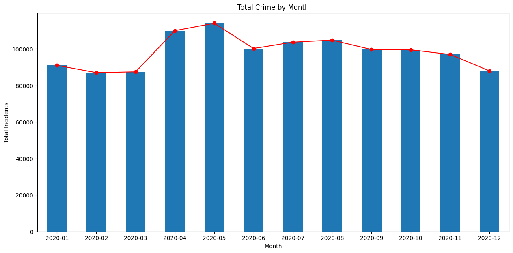

Creating Maps

Overview
Similar to Pandas, GeoPandas has a plot() method that
can plot geospatial data using Matplotlib.
We will work with census data to create a choropleth map of population density. We will start with a shapefile of census tracts, and join it with tabular data to get a GeoDataframe with census tract geometry and correponding populations.
Setup and Data Download
The following blocks of code will install the required packages and download the datasets to your Colab environment.
import geopandas as gpd
import matplotlib.pyplot as plt
import os
import pandas as pd
import requestsdata_folder = 'data'
output_folder = 'output'
if not os.path.exists(data_folder):
os.mkdir(data_folder)
if not os.path.exists(output_folder):
os.mkdir(output_folder)def download(url):
filename = os.path.join(data_folder, os.path.basename(url))
if not os.path.exists(filename):
with requests.get(url, stream=True, allow_redirects=True) as r:
with open(filename, 'wb') as f:
for chunk in r.iter_content(chunk_size=8192):
f.write(chunk)
print('Downloaded', filename)We will download the the census tracts shapefile and a CSV file containing a variety of population statistics for each tract.
shapefile_name = 'tl_2019_06_tract'
shapefile_exts = ['.shp', '.shx', '.dbf', '.prj']
data_url = 'https://github.com/spatialthoughts/python-dataviz-web/releases/' \
'download/census/'
for ext in shapefile_exts:
url = data_url + shapefile_name + ext
download(url)
csv_name = 'ACSST5Y2019.S0101_data.csv'
download(data_url + csv_name)Data Pre-Processing
Let’s read the census tracts shapefile and the CSV file containing population counts.
shapefile_path = os.path.join(data_folder, shapefile_name + '.shp')
tracts = gpd.read_file(shapefile_path)
tractsWe now read the file containing a variety of population statistics
for each tract. We read this file as a Pandas DataFrame. The CSV file
contains an extra row before the header, so we specify
skiprows=[1] to skip reading it.
To join this DataFrame with the GeoDataFrame, we need a column with
unique identifiers. We use the GEOID column and process the
id so they match exactly in both datasets.
filtered = table[['GEO_ID','NAME', 'S0101_C01_001E']]
filtered = filtered.rename(columns = {'S0101_C01_001E': 'Population', 'GEO_ID': 'GEOID'})
filtered['GEOID'] = filtered.GEOID.str[-11:]Finally, we do a table join using the merge method.
For creating a choropleth map, we must normalize the population
counts. US Census Bureau recommends
calculating the population density by dividing the total population by
the land area. The original shapefile contains a column
ALAND with the land area in square kilometers. Using it, we
compute a new column density containing the persons per
square kilometer.
Create a Choropleth Map
The plot() method will render the data to a plot.
Reference: geopandas.GeoDataFrame.plot
You can supply additional style options to change the appearance of
the map. facecolor and edgecolor parameters
are used to determine the fill and outline colors respectively. The
stroke width can be adjusted using the linewidth
parameter.
fig, ax = plt.subplots(1, 1)
fig.set_size_inches(10,10)
gdf.plot(ax=ax, facecolor='#f0f0f0', edgecolor='#de2d26', linewidth=0.5)
plt.show()We have the population density for each tract in the
density column. We can assign a color to each polygon based
on the value in this column - resulting in a choropleth map.
Additionally, we need to specify a color ramp using cmap
and classification scheme using scheme. The classification
schedule will determine how the continuous data will be classified into
discrete bins.
Tip: You can add
_rto any color ramp name to get a reversed version of that ramp.
References: - Matplotlib Colormaps - Mapclassify Classification Schemes
fig, ax = plt.subplots(1, 1)
fig.set_size_inches(10,10)
gdf.plot(ax=ax, column='density', cmap='RdYlGn_r', scheme='quantiles')
plt.show()Instead of the class breaks being determined by the classification
scheme, we can also manually specify the ranges. This is preferable so
we can have a human-interpretable legend. The legend=True
parameter adds a legend to our plot.
fig, ax = plt.subplots(1, 1)
fig.set_size_inches(10,10)
classification_kwds={
'bins': [1,10,25,50,100, 250, 500, 1000, 5000]
}
gdf.plot(ax=ax, column='density', cmap='RdYlGn_r', scheme='User_Defined',
classification_kwds=classification_kwds, legend=True)
plt.show()We can supply legend customization options via the
legend_kwds parameter and adjust the legend position,
formatting of the text, and add a legend title. We can also manually
adjust the legend entries, to give a more legible labels.
legend_kwds= {
'loc': 'upper right',
'bbox_to_anchor': (0.8, 0.9),
'fmt': '{:<5.0f}',
'frameon': False,
'fontsize': 8,
'title': 'persons/sq.km.'
}
classification_kwds={
'bins':[1,10,25,50,100, 250, 500, 1000, 5000]
}
fig, ax = plt.subplots(1, 1)
fig.set_size_inches(10,10)
gdf.plot(ax=ax, column='density', cmap='RdYlGn_r', scheme='User_Defined',
classification_kwds=classification_kwds,
legend=True, legend_kwds=legend_kwds)
ax.set_axis_off()
# Change the last entry in the legend to '>5000'
legend = ax.get_legend()
legend.texts[-1].set_text('> 5000')
plt.show()Once we are happy with the look, we add a title and save the result
as a PNG file. Remember to call plt.savefig() before
showing the plot as the plot gets emptied after being shown.
legend_kwds= {
'loc': 'upper right',
'bbox_to_anchor': (0.8, 0.9),
'fmt': '{:<5.0f}',
'frameon': False,
'fontsize': 8,
'title': 'persons/sq.km.'
}
classification_kwds={
'bins':[1,10,25,50,100, 250, 500, 1000, 5000]
}
fig, ax = plt.subplots(1, 1)
fig.set_size_inches(10,10)
gdf.plot(ax=ax, column='density', cmap='RdYlGn_r', scheme='User_Defined',
classification_kwds=classification_kwds,
legend=True, legend_kwds=legend_kwds)
ax.set_axis_off()
# Change the last entry in the legend to '>5000'
legend = ax.get_legend()
legend.texts[-1].set_text('> 5000')
# Add a title
ax.set_title('California Population Density (2019)', size = 18)
output_path = os.path.join(output_folder, 'california_pop.png')
plt.savefig(output_path, dpi=300)
plt.show()
Exercise
- Plot the census tracts geodataframe
tractswith just outlines and no fill color. - Display the map zoomed-in around the San Francisco area between
Latitudes from
37.71to37.82and Longitudes from-122.53to-122.36.

Use the code block below as your starting point.
Hints:
- Set the
facecoloroption to'none'for no fills. Refer to the style_kwds parameter of theplot()method for more details. - Use the
set_xlim()andset_ylim()methods to set the view area of the Axes. Remember that Latitudes are Y-coordinates and Longitudes are X-Coordinates.
Using Basemaps

Overview
Creating geospatial visualizations often require overlaying your data on a basemap. Contextily is a package that allows you to fetch various basemaps from the internet and add them to your plot as static images.
We will learn how to take a shapefile showing the path of the 2017 Solar Eclipse and create a map with a topographic basemap. NASA also provides similar data for other eclipses, including the 2024 Total Solar Eclipse.
Setup and Data Download
The following blocks of code will install the required packages and download the datasets to your Colab environment.
import contextily as cx
import geopandas as gpd
import matplotlib.pyplot as plt
import os
import requests
import shapelydata_folder = 'data'
output_folder = 'output'
if not os.path.exists(data_folder):
os.mkdir(data_folder)
if not os.path.exists(output_folder):
os.mkdir(output_folder)def download(url):
filename = os.path.join(data_folder, os.path.basename(url))
if not os.path.exists(filename):
with requests.get(url, stream=True, allow_redirects=True) as r:
with open(filename, 'wb') as f:
for chunk in r.iter_content(chunk_size=8192):
f.write(chunk)
print('Downloaded', filename)path_shapefile = 'upath17'
umbra_shapefile = 'umbra17'
penumbra_shapefile = 'penum17'
shapefile_exts = ['.shp', '.shx', '.dbf', '.prj']
data_url = 'https://github.com/spatialthoughts/python-dataviz-web/releases/' \
'download/eclipse/'
for shapefile in [path_shapefile, umbra_shapefile, penumbra_shapefile]:
for ext in shapefile_exts:
url = data_url + shapefile + ext
download(url)Data Pre-Processing
Create a Multi-Layer Map
We can show a GeoDataFrame using the plot() method.
fig, ax = plt.subplots(1, 1)
fig.set_size_inches(15,7)
path_gdf.plot(
ax=ax,
facecolor='#969696',
edgecolor='none',
alpha=0.5)
plt.show()To add another layer to our plot, we can simply render another GeoDataFrame on the same Axes.
Add A BaseMap
The visualization is not useful as it is missing context. We want to
overlay this on a basemap to understand where the eclipse was visible
from. We can choose from a variety of basemap tiles. There are over 200
basemap styles included in the library. Let’s see them using the
providers property.
Some of the providers are open-access while others require registration and obtaining an API key. We can filter the list to only open-access providers.
For overlaying the eclipse path, let’s use the OpenTopoMap basemap. We need to specify a CRS for the map. For now, let’s use the CRS of the original shapefile.
fig, ax = plt.subplots(1, 1)
fig.set_size_inches(15,7)
path_gdf.plot(
ax=ax,
facecolor='#969696',
edgecolor='none',
alpha=0.5)
umbra_gdf.plot(
ax=ax,
facecolor='#252525',
edgecolor='none')
cx.add_basemap(
ax,
crs=path_gdf.crs,
source=cx.providers.OpenTopoMap)
plt.show()We can request higher resolution tiles by specifying the
zoom parameter. But increasing zoom level means many more
tiles need to be downloaded. Contextily has some utility functions to
find out the zoom level and corresponding tiles that needs to be
downloaded.
fig, ax = plt.subplots(1, 1)
fig.set_size_inches(15,7)
path_gdf.plot(
ax=ax,
facecolor='#969696',
edgecolor='none',
alpha=0.5)
umbra_gdf.plot(
ax=ax,
facecolor='#252525',
edgecolor='none')
cx.add_basemap(
ax,
crs=path_gdf.crs,
source=cx.providers.OpenTopoMap,
zoom=4)
plt.show()As this eclipse primarily covers the United States, we can create a visualization in a CRS suited for the region. We reproject the layers to the US National Atlas Equal Area projection and set the map extent to the bounds of the continental united states.
crs = 'EPSG:9311'
path_reprojected = path_gdf.to_crs(crs)
umbra_reprojected = umbra_gdf.to_crs(crs)
# Use the bounding box coordinates for continental us
usa = shapely.geometry.box(-125, 24, -66, 49)
usa_gdf = gpd.GeoDataFrame(geometry=[usa], crs='EPSG:4326')
usa_gdf_reprojected = usa_gdf.to_crs(crs)
bounds = usa_gdf_reprojected.total_boundsfig, ax = plt.subplots(1, 1)
fig.set_size_inches(15,7)
# Set the bounds
ax.set_xlim(bounds[0], bounds[2])
ax.set_ylim(bounds[1], bounds[3])
path_reprojected.plot(
ax=ax,
facecolor='#969696',
edgecolor='none',
alpha=0.5)
umbra_reprojected.plot(
ax=ax,
facecolor='#252525',
edgecolor='none')
cx.add_basemap(
ax,
crs=path_reprojected.crs,
source=cx.providers.OpenTopoMap,
zoom=5)
ax.set_axis_off()
ax.set_title('2017 Total Solar Eclipse Path', size = 18)
plt.show()
Exercise
- Our eclipse dataset also contains polygons for penumbra contours.
Add them to the visualization. This layer has a column
Obscurthat contains the obscuration value (the fraction of the Sun’s area covered by the Moon). Style the contours by the obscuration value and add it to the map. - Instead of the OpenTopoMap, create a visualization using another
basemap. Some options to try are
Esri.WorldTerrain,CartoDB.PositronandUSGS.USTopo.

The code below reads and re-projects the penumbra shapefile.
penumbra_shapefile_path = os.path.join(
data_folder, penumbra_shapefile + '.shp')
penumbra_gdf = gpd.read_file(penumbra_shapefile_path)
penumbra_reprojected = penumbra_gdf.to_crs(crs)
penumbra_reprojectedYou can use the code block below for creating the visualization. It
render the Penumbra polygons by the Obsur column using a
transparency value of 0.2 (20%). Complete the exercise by
rendering the Path and Umbra layers on top and add a basemap of your
choice.
fig, ax = plt.subplots(1, 1)
fig.set_size_inches(15,7)
# Set the bounds
ax.set_xlim(bounds[0], bounds[2])
ax.set_ylim(bounds[1], bounds[3])
penumbra_reprojected.plot(
ax=ax,
column='Obscur',
cmap='Greys',
linewidth=1,
alpha=0.2
)
ax.set_axis_off()
ax.set_title('2017 Total Solar Eclipse Path', size = 18)
plt.show()XArray Basics


Overview
Xarray is an evolution of rasterio and is inspired by libraries like pandas to work with raster datasets. It is particularly suited for working with multi-dimensional time-series raster datasets. It also integrates tightly with dask that allows one to scale raster data processing using parallel computing. XArray provides Plotting Functions based on Matplotlib.
In this section, we will learn about XArray basics and learn how to work with a time-series of Sentinel-2 satellite imagery to create and visualize a median composite image.
Setup and Data Download
The following blocks of code will install the required packages and download the datasets to your Colab environment.
%%capture
if 'google.colab' in str(get_ipython()):
!pip install pystac-client odc-stac rioxarray daskGet Satellite Imagery using STAC API
We define a location and time of interest to get some satellite imagery.
Let’s use Element84 search endpoint to look for items from the sentinel-2-l2a collection on AWS.
catalog = pystac_client.Client.open(
'https://earth-search.aws.element84.com/v1')
# Define a small bounding box around the chosen point
km2deg = 1.0 / 111
x, y = (longitude, latitude)
r = 1 * km2deg # radius in degrees
bbox = (x - r, y - r, x + r, y + r)
search = catalog.search(
collections=['sentinel-2-c1-l2a'],
bbox=bbox,
datetime=f'{year}',
query={'eo:cloud_cover': {'lt': 30}},
)
items = search.item_collection()Load the matching images as a XArray Dataset.
XArray Terminology
We now have a xarray.Dataset object. Let’s understand
what is contained in a Dataset.
- Variables: This is similar to a band in a raster dataset. Each variable contains an array of values.
- Dimensions: This is similar to number of array axes.
- Coordinates: These are the labels for values in each dimension.
- Attributes: This is the metadata associated with the dataset.

A Dataset consists of one or more xarray.DataArray
object. This is the main object that consists of a single variable with
dimension names, coordinates and attributes. You can access each
variable using dataset.variable_name syntax.
Selecting Data
XArray provides a very powerful way to select subsets of data, using
similar framework as Pandas. Similar to Panda’s loc and
iloc methods, XArray provides sel and
isel methods. Since DataArray dimensions have names, these
methods allow you to specify which dimension to query.
Let’s select the temperature anomany values for the last time step.
Since we know the index (-1) of the datam we can use isel
method.
You can call .values on a DataArray to get an array of
the values.
You can query for a values at using multiple dimensions.
We can also specify a value to query using the sel()
method.
Let’s see what are the values of time variable.
We can query using the value of a coordinate using the
sel() method.
The sel() method also support nearest neighbor lookups.
This is useful when you do not know the exact label of the dimension,
but want to find the closest one.
Tip: You can use
interp()instead ofsel()to interpolate the value instead of closest lookup.
The sel() method also allows specifying range of values
using Python’s built-in slice() function. The code below
will select all observations during January 2023.
Aggregating Data
A very-powerful feature of XArray is the ability to easily aggregate data across dimensions - making it ideal for many remote sensing analysis. Let’s create a median composite from all the individual images.
We apply the .median() aggregation across the
time dimension.
Visualizing Data
XArray provides a plot.imshow() method based on
Matplotlib to plot DataArrays.
Reference : xarray.plot.imshow
To visualize our Dataset, we first convert it to a DataArray using
the to_array() method. All the variables will be converted
to a new dimension. Since our variables are image bands, we give the
name of the new dimesion as band.
The easy way to visualize the data without the outliers is to pass
the parameter robust=True. This will use the 2nd and 98th
percentiles of the data to compute the color limits. We also specify the
set_aspect('equal') to ensure the original aspect ratio is
maintained and the image is not stretched.
fig, ax = plt.subplots(1, 1)
fig.set_size_inches(5,5)
median_da.sel(band=['red', 'green', 'blue']).plot.imshow(
ax=ax,
robust=True)
ax.set_title('RGB Visualization')
ax.set_axis_off()
ax.set_aspect('equal')
plt.show()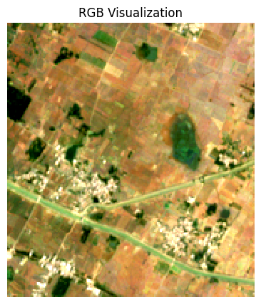
We can save the resulting median compositeas a multi-band GeoTIFF file.
Exercise
Display the median composite for the month of May.
The snippet below takes our time-series and aggregate it to a monthly
median composites groupby() method.
You now have a new dimension named month. Start your
exercise by first converting the Dataset to a DataArray. Then extract
the data for the chosen month using sel() method and plot
it.
Mapping Gridded Datasets

Overview
In this section, we will take the Gridded Monthly Temperature Anomaly Data from 1880-present from GISTEMP and visualize the temperature anomaly for any year.
Setup and Data Download
The following blocks of code will install the required packages and download the datasets to your Colab environment.
import cartopy
import cartopy.crs as ccrs
import os
import matplotlib.pyplot as plt
import xarray as xrdata_folder = 'data'
output_folder = 'output'
if not os.path.exists(data_folder):
os.mkdir(data_folder)
if not os.path.exists(output_folder):
os.mkdir(output_folder)def download(url):
filename = os.path.join(data_folder, os.path.basename(url))
if not os.path.exists(filename):
from urllib.request import urlretrieve
local, _ = urlretrieve(url, filename)
print('Downloaded ' + local)
filename = 'gistemp1200_GHCNv4_ERSSTv5.nc'
data_url = 'https://github.com/spatialthoughts/python-dataviz-web/releases/' \
'download/gistemp/'
download(data_url + filename)Data Pre-Processing
We read the data using XArray and select the
tempanomaly variable.
file_path = os.path.join(data_folder, filename)
ds = xr.open_dataset(file_path)
da = ds.tempanomaly
daWe have monthly anomalies from 1880-present. Let’s aggregate it to mean yealy anomalies.
Plotting using Matplotlib
Let’s extract the data for one of the years.
We can use the .sel() method to query using the value of
the year dimension.
We can customize the plot using Matplotlib’s options.
Plotting using CartoPy
To create more informative map visualization, we need to reproject this grid to another projection. CartoPy supports a wide range of projections and can plot them using matplotlib. CartoPy creates a GeoAxes object and replaces the default Axes with it. This allows you to plot the data on a specified projection.
We start as usual by create a subplot but specify an additional argument to set the CRS from CartoPy.
Reference: CartoPy List of Projections
projection = ccrs.Orthographic(0, 30)
fig, ax = plt.subplots(1, 1, subplot_kw={'projection': projection})
fig.set_size_inches(5,5)
anomaly.plot.imshow(ax=ax,
vmin=-3, vmax=3, cmap='coolwarm',
transform=ccrs.PlateCarree())
plt.tight_layout()
plt.show()We can further customize the map by adjusting the colorbar.
Reference: matplotlib.pyplot.colorbar
projection = ccrs.Orthographic(0, 30)
cbar_kwargs = {
'orientation':'horizontal',
'fraction': 0.025,
'pad': 0.05,
'extend':'neither'
}
fig, ax = plt.subplots(1, 1, subplot_kw={'projection': projection})
fig.set_size_inches(8, 8)
anomaly.plot.imshow(
ax=ax,
vmin=-3, vmax=3, cmap='coolwarm',
transform=ccrs.PlateCarree(),
add_labels=False,
cbar_kwargs=cbar_kwargs)
ax.coastlines()
plt.title(f'Temperature Anomaly in {year} (°K)', fontsize = 14)
output_folder = 'output'
output_path = os.path.join(output_folder, 'anomaly.jpg')
plt.savefig(output_path, dpi=300)
plt.show()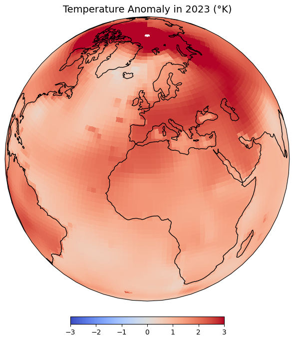
Exercise
Display the map in the Equal Earth projection.

Visualizing Rasters

Overview
In the previous notebook, we learnt how to use Xarray to work with gridded datasets. XArray is also well suited to work with georeferenced rasters - such as satellite imagery, population grids, or elevation data.rioxarray is an extension of xarray that makes it easy to work with geospatial rasters.
In this section, we will take 4 individual SRTM tiles around the Mt.
Everest region and merge them to a single GeoTiff using RasterIO. We
will also use matplotlib to add labels to the final map
using annonations.
Setup and Data Download
The following blocks of code will install the required packages and download the datasets to your Colab environment.
By convention, rioxarray is imported as
rxr.
Remember to always import
rioxarrayeven if you are using sub-modules such asmerge_arrays. Importingrioxarrayactivates therioaccessor which is required for all operations.
import os
import rioxarray as rxr
from rioxarray.merge import merge_arrays
import matplotlib.pyplot as pltdata_folder = 'data'
output_folder = 'output'
if not os.path.exists(data_folder):
os.mkdir(data_folder)
if not os.path.exists(output_folder):
os.mkdir(output_folder)def download(url):
filename = os.path.join(data_folder, os.path.basename(url))
if not os.path.exists(filename):
from urllib.request import urlretrieve
local, _ = urlretrieve(url, filename)
print('Downloaded ' + local)
srtm_tiles = [
'N27E086.hgt',
'N27E087.hgt',
'N28E086.hgt',
'N28E087.hgt'
]
data_url = 'https://github.com/spatialthoughts/python-dataviz-web/releases/' \
'download/srtm/'
for tile in srtm_tiles:
url = f'{data_url}/{tile}'
download(url)Rioxarray Basics
The open_rasterio() method from rioxarray
is able to read any data source supported by. the rasterio
library. Let’s open a single SRTM tile using rioxarray.
filename = 'N28E087.hgt'
file_path = os.path.join(data_folder, filename)
rds = rxr.open_rasterio(file_path)The result is a xarray.DataArray object.
You can access the pixel values using the values
property which returns the array’s data as a numpy array.
A xarray.DataArray object also contains 1 or more
coordinates. Each coordinate is a 1-dimensional array
representing values along one of the data axes. In case of the 1-band
SRTM elevation data, we have 3 coordinates - x,
y and band.
The raster metadata is stored in the rio
accessor. This is enabled by the rioxarray library which
provides geospatial functions on top of xarray.
Plotting Multiple Rasters
Open each source file using open_rasterio() method and
store the resulting datasets in a list.
datasets = []
for tile in srtm_tiles:
path = os.path.join(data_folder, tile)
rds = rxr.open_rasterio(path)
band = rds.sel(band=1)
datasets.append(band)You can visualize any DataArray object by calling
plot() method. Here we create a subplot with 1 row and 4
columns. The subplots() method will return a list of Axes
that we can use to render each of the source SRTM rasters. For plots
with multiple columns, the Axes will be a nested list. To easily iterate
over it, we can use .flat which returns a 1D iterator on
the axes.
While plotting the data, we can use the cmap option to
specify a color ramp. Here we are using the built-in Greys
ramp. Appending **_r** gives us the inverted ramp with blacks
representing lower elevation values. When plotting on multiple Axes, it
is useful to specify set_aspect('equal') so the aspect raio
of the plot is maintained even if there is not enough space.
Merging Rasters
Now that you understand the basic data structure of xarray
and the rio extension, let’s use it to process some data. We
will take 4 individual SRTM tiles and merge them to a single GeoTiff.
You will note that rioxarray handles the CRS and transform
much better - taking care of internal details and providing a simple
API.
We will use the merge_arrays() method from the
rioxarray.merge module to merge the rasters. We can also
specify an optional method that controls how overlapping
tiles are merged. Here we have chosen first which takes the
value of the first raster in the overlapping region.
Reference: merge_arrays()
We can now visualize the merged raster.
fig, ax = plt.subplots()
fig.set_size_inches(12, 10)
merged.plot.imshow(ax=ax, cmap='Greys_r')
ax.set_title('merged')
plt.show()We can save the resulting raster in any format supported by GDAL
using the to_raster() method. Let’s save this as a Cloud-Optimized GeoTIFF
(COG).
Annotating Plots
Sometime it is helpful to add annotations on your plot to highlight a feature or add a text label. In this section we will learn how to use the annotate the DEM to show the location and elevation of Mt. Everest.
First, we locate the coordinates of the maximum elevation in the
merged DataArray using the max() function. We
can then use where() function to filter the elements where
the value equals the maximum elevation. Lastly, we run
squeeze() to remove the extra empty dimension from the
result.
References:
We now extract the x,y coordinates and the value of the maximum elevation.
max_x = max_da.x.values
max_y = max_da.y.values
max_elev = int(max_da.values)
print(max_x, max_y, max_elev)Now we plot the merged raster and annotate it using the
annotate() function.
Reference: matplotlib.pyplot.annotate
fig, ax = plt.subplots(1, 1)
fig.set_size_inches(12, 10)
merged.plot.imshow(ax=ax, cmap='viridis', add_labels=False)
ax.plot(max_x, max_y, color='red', marker='^', markersize=11)
ax.annotate(f'Mt. Everest (elevation:{max_elev}m)',
xy=(max_x, max_y), xycoords='data',
xytext=(20, 20), textcoords='offset points',
arrowprops={'arrowstyle':'->', 'color':'black'}
)
plt.tight_layout()
plt.show()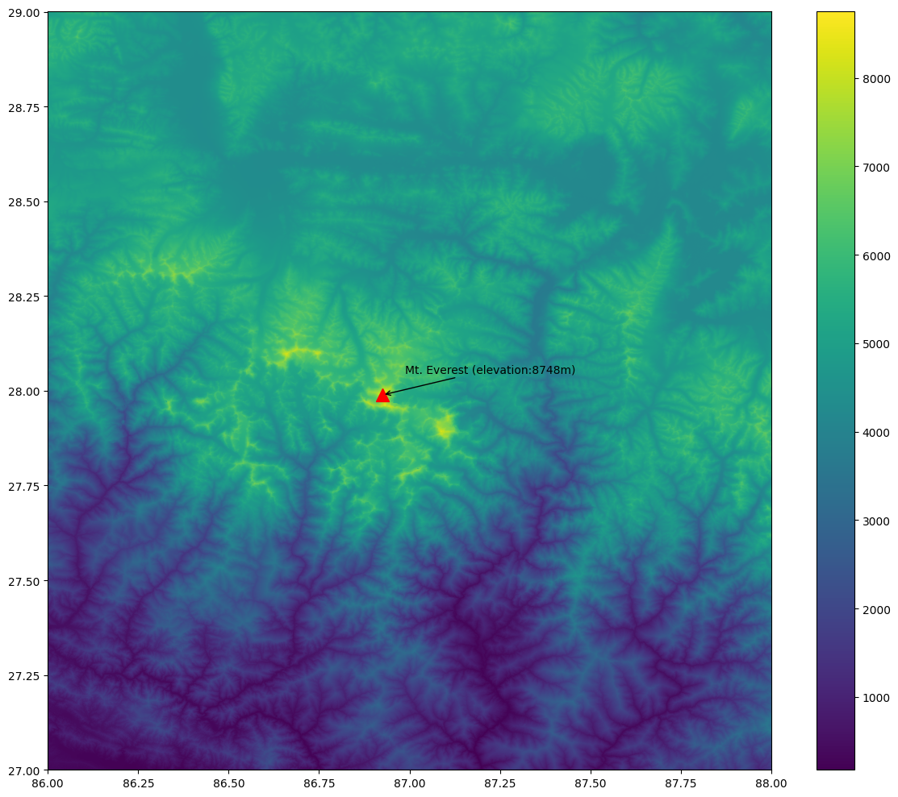
Exercise
Add contours to the elevation plot below.

Start with the code snippet below and use the xarray.plot.contour
function to render the contours
Hint: Use the options colors=white and
levels=10.
fig, ax = plt.subplots(1, 1)
fig.set_size_inches(10, 10)
merged.plot.imshow(
ax=ax,
cmap='viridis',
add_labels=False,
add_colorbar=False)
ax.set_axis_off()
plt.tight_layout()
plt.show()Assignment

Overview
Your assignment is to create a colorized river basin map for your country using the HydroRIVERS data.
This notebook contains code to download and pre-process the data. Your task is to plot the rivers using Matplotlib and achieve a unique style shown below.

Setup and Data Download
data_folder = 'data'
output_folder = 'output'
if not os.path.exists(data_folder):
os.mkdir(data_folder)
if not os.path.exists(output_folder):
os.mkdir(output_folder)def download(url):
filename = os.path.join(data_folder, os.path.basename(url))
if not os.path.exists(filename):
with requests.get(url, stream=True, allow_redirects=True) as r:
with open(filename, 'wb') as f:
for chunk in r.iter_content(chunk_size=8192):
f.write(chunk)
print('Downloaded', filename)
data_url = 'https://github.com/spatialthoughts/python-dataviz-web/releases/download/'
# This is a subset of the main HydroRivers dataset of all
# rivers having `UPLAND_SKM` value greater than 100 sq. km.
hydrorivers_file = 'hydrorivers_100.gpkg'
hydrorivers_url = data_url + 'hydrosheds/'
countries_file = 'ne_10m_admin_0_countries_ind.zip'
countries_url = data_url + 'naturalearth/'
download(hydrorivers_url + hydrorivers_file)
download(countries_url + countries_file)Data Pre-Processing
Read the countries shapefile.
For the assignment, you need to pick the country for which you want
to create the map. We can print a list of values from the
SOVEREIGNT column of country_gdf GeoDataFrame
using country_gdf.SOVEREIGNT.values to know the names of
all countries.
Select a country name. Replace the value below with your chosen country.
Apply filters to select the country feature. We use an additional
filter TYPE != 'Dependency' to exclude overseas
territories. You may have to adjust the filter to get the correct
country polygon.
selected_country = country_gdf[
(country_gdf['SOVEREIGNT'] == country) &
(country_gdf['TYPE'] != 'Dependency')
]
selected_countryWe read the river network data from HydroRivers. We specify the
mask parameter which clips the layer to the country
boundary while reading the data.
This step can take a few minutes depending on the size of the country.
hydrorivers_filepath = os.path.join(data_folder, hydrorivers_file)
river_gdf = gpd.read_file(hydrorivers_filepath, mask=selected_country)
river_gdfVisualize the river network.
fig, ax = plt.subplots(figsize=(10, 10))
title = f'Rivers of {country}'
river_gdf.plot(ax=ax)
ax.set_title(title)
ax.set_axis_off()
plt.show()We want to style the rivers so that the width of the line is
proportional to the value in the UPLAND_SKM attribute. We
add a new column width to the GeoDataFrame by scaling the
input values to a range of target widths.
Tip: These values will play an important role in your final visualization. Adjust these to suit the range of values for your country.
original_min = 300
original_max = 10000
target_min = 0.2
target_max = 0.9
scaled = (river_gdf['UPLAND_SKM'] - original_min) / (original_max - original_min)
river_gdf['width'] = scaled.clip(0, 1) * (target_max - target_min) + target_min
river_gdf_final = river_gdf.sort_values(['UPLAND_SKM', 'width'])[
['MAIN_RIV', 'UPLAND_SKM', 'width', 'geometry']]
river_gdf_finalYour task is to take the river_gdf_final GeoDataFrame
and render the river network by applying the following styling
guidelines. Refer to the geopandas.GeoDataFrame.plot()
documentation for parameter values and options.
- Assign a color to each river segment based on the value of
MAIN_RIVcolumn. Hint: setcategorical=True. - Assign width to each item based on the value in the
widthcolumn. - Set the map background to black.
- Set the title to white and change the font to be larger.
Interactive Maps with Folium

Overview
Folium is a Python library that allows you to create interactive maps based on the popular Leaflet javascript library.
In this section, we will learn how to create an interactive map showing driving directions between two locations.
Setup
Folium Basics
We will learn the basics of folium by creating an interactive map showing the driving directions between two chosen locations. Let’s start by defining the coordinates of two cities.
To create a map, we initialize the folium.Map() class
which creates a map object with the default basemap. To display the map
a Jupyter notebook, we can simply enter the name of the map object.
The default map spans the full width of the Jupyter notebook - making
it difficult to navigate. The Map() constructor supports
width and height parameters that control the
size of the leaflet map, but you still end up with a lot of extra empty
space below the map. The preferred way to get a map of exact size is to
create a Figure first and add the map object to it.
from folium import Figure
fig = Figure(width=800, height=400)
m = folium.Map(location=[39.83, -98.58], zoom_start=4, width=800, height=400)
fig.add_child(m)The map object m can be manipulated by adding different
elements to it. Contrary to how Matplotlib objects work, the map object
does not get emptied when displayed. So you are able to visualize and
incrementally add elements to it. Let’s add some markers to the map
using folium.map.Marker
class.
folium.Marker(san_francisco, popup='San Francisco').add_to(m)
folium.Marker(new_york, popup='New York').add_to(m)
mThe markers can be customized to have a different color or icons. You
can check the folium.map.Icon
class for options for creating icons. This class supports a vast range
of icons from the fontawesome
icons and bootstrap icons
libraries. You can choose the name of the icon from there to use it in
your Folium map. The prefix parameter can be fa
for FontAwesome icons or glyphicon for Bootstrap3.
from folium import Figure
fig = Figure(width=800, height=400)
m = folium.Map(location=[39.83, -98.58], zoom_start=4)
folium.Marker(
san_francisco,
popup='San Francisco',
icon=folium.Icon(
color='green', icon='crosshairs', prefix='fa')
).add_to(m)
folium.Marker(
new_york,
popup='New York',
icon=folium.Icon(
color='red', icon='crosshairs', prefix='fa')
).add_to(m)
fig.add_child(m)We will be using OpenRouteService API to calculate the directions. Visit HeiGIT Sign Up page and create an account. Once your account is activated, visit your Dashboard. Copy the long string for Basic Key key and enter it below.
import requests
san_francisco = (37.7749, -122.4194)
new_york = (40.661, -73.944)
parameters = {
'api_key': ORS_API_KEY,
'start' : '{},{}'.format(san_francisco[1], san_francisco[0]),
'end' : '{},{}'.format(new_york[1], new_york[0])
}
response = requests.get(
'https://api.openrouteservice.org/v2/directions/driving-car', params=parameters)
if response.status_code == 200:
print('Request successful.')
data = response.text
else:
print('Request failed.')The API response is formatted as a GeoJSON string.
We can parse the GeoJSON as a dictionary and extract the route summary returned by the API which contains the total driving distance in meters.
parsed_data = json.loads(data)
summary = parsed_data['features'][0]['properties']['summary']
distance = round(summary['distance']/1000)
tooltip = 'Driving Distance: {} km'.format(distance)
tooltipWe can use the folium.features.GeoJson
class to load any data in the GeoJSON format directly. We can specify a
smooth_factor parameter which can be used to simplify the
line displayed when zoomed-out. Setting a higher number results in
better performance.
Folium maps can be saved to a HTML file by calling
save() on the map object.
Exercise
- Create an interactive map of driving directions between two of your chosen cities.
- Cutomize the marker icons to a car icon. Reference
folium.map.Icon. - Change the route line to red color with a line width of 1
pixels. Reference
folium.features.GeoJSONStyling

Use the code block below as the starting point and replace the variables below with those of your chosen locations and insert your own API key.
import folium
from folium import Figure
import json
import requests
###############################
### Replace Variables Below
###############################
origin = (37.7749, -122.4194)
origin_name = 'San Francisco'
destination = (40.661, -73.944)
destination_name = 'New York'
map_center = (39.83, -98.58)
ORS_API_KEY = ''
###############################
parameters = {
'api_key': ORS_API_KEY,
'start' : '{},{}'.format(origin[1], origin[0]),
'end' : '{},{}'.format(destination[1], destination[0])
}
response = requests.get(
'https://api.openrouteservice.org/v2/directions/driving-car', params=parameters)
if response.status_code == 200:
print('Request successful.')
data = response.text
else:
print('Request failed.')
parsed_data = json.loads(data)
summary = parsed_data['features'][0]['properties']['summary']
distance = round(summary['distance']/1000)
tooltip = 'Driving Distance: {} km'.format(distance)
fig = Figure(width=800, height=400)
m = folium.Map(location=map_center, zoom_start=4)
folium.Marker(
origin,
popup=origin_name,
icon=folium.Icon(
color='green', icon='car', prefix='fa')
).add_to(m)
folium.Marker(
destination,
popup=destination_name,
icon=folium.Icon(
color='red', icon='car', prefix='fa')
).add_to(m)
folium.GeoJson(
data,
tooltip=tooltip,
smooth_factor=1,
).add_to(m)
fig.add_child(m)Multi-layer Interactive Maps

Open the notebook named 09_multilayer_maps.ipynb.
Overview
Folium
supports creating maps with multiple layers. Recent versions of
GeoPandas have built-in support to create interactive folium maps from a
GeoDataFrame using the explore() function.
In this section, we will create a multi-layer interactive map using 2 vector datasets.
Setup and Data Download
import os
import fiona
import folium
from folium import Figure
import geopandas as gpd
import requestsdata_folder = 'data'
output_folder = 'output'
if not os.path.exists(data_folder):
os.mkdir(data_folder)
if not os.path.exists(output_folder):
os.mkdir(output_folder)Using GeoPandas explore()
Read the individual layers from the GeoPackage using GeoPandas. First
we use fiona to list all available layers in the
GeoPackage.
data_pkg_path = 'data'
filename = 'karnataka.gpkg'
path = os.path.join(data_pkg_path, filename)
layers = fiona.listlayers(path)
layersroads_gdf = gpd.read_file(path, layer='karnataka_highways')
districts_gdf = gpd.read_file(path, layer='karnataka_districts')
state_gdf = gpd.read_file(path, layer='karnataka')We can use the explore()
method to create an interactive folium map from the GeoDataFrame. When
you call explore() a folium object is created. You can save
that object and use it to display or add more layers to the map.
The default output of the explore() method is a
full-width folium map. If you need more control, a better approach is to
create a follium.Figure object and add the map to it. For
this approach we need to first compute the extent of the map.
Now we can create a figure of the required size, and add a folium map
to it. The explore() function takes a m
agrument where we can supply an existing folium map to which to render
the GeoDataFrame.
fig = Figure(width=800, height=400)
m = folium.Map()
m.fit_bounds([[bounds[1],bounds[0]], [bounds[3],bounds[2]]])
districts_gdf.explore(m=m)
fig.add_child(m)Folium supports a variety of basemaps. Let’s change the basemap to
use Cartodb Positron tiles. Additionally, we can change the
styling using the color and style_kwds
parameters.
Reference: Folium Tiles
fig = Figure(width=800, height=400)
m = folium.Map(tiles='Cartodb Positron')
m.fit_bounds([[bounds[1],bounds[0]], [bounds[3],bounds[2]]])
districts_gdf.explore(
m=m,
color='black',
style_kwds={'fillOpacity': 0.3, 'weight': 0.5},
)
fig.add_child(m)Let’s add the roads_gdf layer to the map.
The GeoDataFrame contains roads of different categories as given in
the ref column. Let’s add a category column so we can use
it to apply different styles to each category of the road.
def get_category(row):
ref = str(row['ref'])
if 'NH' in ref:
return 'NH'
elif 'SH' in ref:
return 'SH'
else:
return 'NA'
roads_gdf['category'] = roads_gdf.apply(get_category, axis=1)
roads_gdfNow we can use the category column to style the layer
with different colors. Additionally, we customize the
tooltip to show only the selected columns when hovering
over a feature and tooltip_kwds to customize the name of
the column being displayed.
fig = Figure(width=800, height=400)
m = folium.Map(tiles='Cartodb Positron')
m.fit_bounds([[bounds[1],bounds[0]], [bounds[3],bounds[2]]])
roads_gdf.explore(
m=m,
column='category',
categories=['NH', 'SH'],
cmap=['#1f78b4', '#e31a1c'],
categorical=True,
tooltip=['ref'],
tooltip_kwds={'aliases': ['name']}
)
fig.add_child(m)Create Multi-layer Maps
When you call explore() a folium object is created. You
can save that object and add more layers to the same object.
fig = Figure(width=800, height=400)
m = folium.Map(tiles='Cartodb Positron')
m.fit_bounds([[bounds[1],bounds[0]], [bounds[3],bounds[2]]])
districts_gdf.explore(
m=m,
color='black',
style_kwds={'fillOpacity': 0.3, 'weight':0.5},
name='districts',
tooltip=False)
roads_gdf.explore(
m=m,
column='category',
categories=['NH', 'SH'],
cmap=['#1f78b4', '#e31a1c'],
categorical=True,
tooltip=['ref'],
tooltip_kwds={'aliases': ['name']},
name='highways'
)
fig.add_child(m)To make our map easier to explore, we also add a Layer
Control that displays the list of layers on the top-right corner
and also allows the users to turn them on or off. The name
parameter to the explore() function controls the name that
will be displayed in the layer control.
Exercise
Add the state_gdf layer to the folium map below with a
thick blue border and no fill. Save the resulting map as a HTML file on
your computer.
Hint: Use the style_kwds with ‘fill’ and
‘weight’ options.

Use the code below as your starting point for the exercise.
fig = Figure(width=800, height=400)
m = folium.Map(tiles='Cartodb Positron')
m.fit_bounds([[bounds[1],bounds[0]], [bounds[3],bounds[2]]])
districts_gdf.explore(
m=m,
color='black',
style_kwds={'fillOpacity': 0.3, 'weight':0.5},
name='districts',
tooltip=False)
roads_gdf.explore(
m=m,
column='category',
categories=['NH', 'SH'],
cmap=['#1f78b4', '#e31a1c'],
categorical=True,
tooltip=['ref'],
name='highways',
tooltip_kwds={'aliases': ['name']}
)
fig.add_child(m)
folium.LayerControl().add_to(m)
mLeafmap Basics

Overview
Leafmap is a Python package for interactive mapping that supports a wide-variety of plotting backends.
We will explore the capabilities of Leafmap and create a map that includes vector and raster layers. For a more comprehensive overview, check out leafmap key Features.
Setup and Data Download
data_folder = 'data'
output_folder = 'output'
if not os.path.exists(data_folder):
os.mkdir(data_folder)
if not os.path.exists(output_folder):
os.mkdir(output_folder)Creating a Map
You can change the basemap to a Google basemap and set the center of
the map. leafmap.Map() supports many arguments to customize
the map and available controls.
References:
Adding Data Layers
Leafmap’s foliumap module supports adding a variety of
data types along with helper functions such as
set_center(). Let’s add a GeoJSON file to the map using
add_geojson().
Reference: leafmap.foliumap.Map.add_geojson
m = leafmap.Map(width=800, height=500)
json_filepath = os.path.join(data_folder, json_file)
m.add_geojson(json_filepath, layer_name='City')
m.set_center(77.59, 12.97, 10)
mWe can also add any vector layer that can be read by GeoPandas. Here
we add a line layer from a GeoPackage using the add_gdf()
function. The styling parameters can be any folium supported styles.
m = leafmap.Map(width=800, height=500)
gpkg_filepath = os.path.join(data_folder, gpkg_file)
roads_gdf = gpd.read_file(gpkg_filepath)
m.add_gdf(roads_gdf, layer_name='Roads', style={'color':'blue', 'weight':0.5})
m.zoom_to_gdf(roads_gdf)
mA very useful feature of LeafMap is the ability to load a
Cloud-Optimized GeoTIFF (COG) file directly from a URL without the need
of a server. The file is streamed directly and high-resolution tiles are
automatically fetched as you zoom in. We load a 8-bit RGB image hosted
on GitHub using the add_cog_layer() function.
Reference: leafmap.Map.add_cog_layer
m = leafmap.Map(width=800, height=500)
bounds = leafmap.cog_bounds(cog_url)
m.add_cog_layer(cog_url, name='Land Use Land Cover')
m.zoom_to_bounds(bounds)
mLeafmap also supports adding custom legends. We define a list of
color codes and labels for the land cover classes contained in the
bangalore_lulc.tif image. We can now add a legend to the
map using the add_legend() function.
Reference: leafmap.foliumap.Map.add_legend
m = leafmap.Map(width=800, height=500)
bounds = leafmap.cog_bounds(cog_url)
m.add_cog_layer(cog_url, name='Land Use Land Cover')
m.zoom_to_bounds(bounds)
# Add a Legend
colors = ['#006400', '#ffbb22','#ffff4c','#f096ff','#fa0000',
'#b4b4b4','#f0f0f0','#0064c8','#0096a0','#00cf75','#fae6a0']
labels = ["Trees","Shrubland","Grassland","Cropland","Built-up",
"Barren / sparse vegetation","Snow and ice","Open water",
"Herbaceous wetland","Mangroves","Moss and lichen"]
m.add_legend(colors=colors, labels=labels)
mWe can save the resulting map to a HTML file using the
to_html() function.
m = leafmap.Map(width=800, height=500)
bounds = leafmap.cog_bounds(cog_url)
m.add_cog_layer(cog_url, name='Land Use Land Cover')
m.zoom_to_bounds(bounds)
# Add a Legend
colors = ['#006400', '#ffbb22','#ffff4c','#f096ff','#fa0000',
'#b4b4b4','#f0f0f0','#0064c8','#0096a0','#00cf75','#fae6a0']
labels = ["Trees","Shrubland","Grassland","Cropland","Built-up",
"Barren / sparse vegetation","Snow and ice","Open water",
"Herbaceous wetland","Mangroves","Moss and lichen"]
m.add_legend(colors=colors, labels=labels)
output_file = 'lulc.html'
output_path = os.path.join(output_folder, output_file)
m.to_html(output_path)Exercise
We want to visualize a large (7.9GB) raster on the map. The URL to a Cloud Optmized GeoTiff (COG) file hosted on Google Cloud Storage is given below. Add the raster to the map, apply a colormap and zoom the map to your region of interest.

Use the code block below as your starting point.
Hints:
- The GeoTIFF image is a single-band image with grayscale values of
night time light intensities. Specify additional
kwargsparameters fromleafmap.Map.add_cog_layer().- The range of these values are between 0-60. Use
rescale='0,60'. - A grayscale image can be displayed in color using a named colormap.
For example
colormap_name='viridis'. - The map automatically zooms to the extent of the COG. Turn that
behavior off by supplying
zoom_to_layer=False.
- The range of these values are between 0-60. Use
- To zoom to your chosen region, use
leafmap.Map.zoom_to_bounds()method with the bounding box in the[minx, miny, maxx, maxy]format. You can use this bounding box app to find the coordinates for your region.
Streamlit Basics
Streamlit is a Python library that allows you to create web-apps and
dashboard by just writing Python code. It provides you with a wide range
of UI widgets and layouts that can be used to build user- interfaces.
Your streamlit app is just a regular Python file with a .py
extension.

Installation and Setting up the Environment
You need to install the streamlit package to create the
app. We will be using Anaconda to install streamlit and
related packages on your machine. Please review the Anaconda
Installation Guide for step-by-step instructions.
- Once you have installed Anaconda, open Anaconda Prompt or a Terminal and run the following commands.
conda update --all
conda create --name streamlit -y
conda activate streamlit- Now your environment is ready. We will install the required
packages. First install
geopandas.
conda install -c conda-forge geopandas -y- Next we will install
streamlitandleafmap.
conda install -c conda-forge streamlit streamlit-folium leafmap -yIf the conda install completes successfully, move to Step 4.
Some users have reported problems where conda is not able to resolve
the environment for installing these packages. Here is an alternate
installation procedure if you face difficulties with above. After
installing geopandas, switch to using pip for installing
the remaining packages.
pip install streamlit streamlit-folium leafmap- After the installation is done, run the following command.
streamlit hello
A new browser tab will open and display the streamlit Hello app.

Your installation is now complete. You can close the terminal window to stop the streamlit server.
Create a Simple Dashboard
Let’s create a simple interactive dashboard by loading a CSV file and displaying a chart with some statistics. We will get familiar with the streamlit app development workflow and explore different widgets and layout elements.
See Live Demo: 
- Create a folder named simple_dashboard on your Desktop.

- Open your favorite text editor and create a file with the following
content. By convention, we import
streamlit as st. Then we can use thest.title()to display the title of our dashboard andst.write()to add a paragraph of text. Save the file in the simple_dashboard folder on your desktop asapp.py
import streamlit as st
st.title('A Simple Dashboard')
st.write('This dashboard displays a chart for the selected region.')
- Once the file is saved, open Anaconda Prompt (Windows) or
Terminal (Mac/Linux). Switch to the conda environment where you
have installed the required packages. We then use
cdcommand to change the current directory to the once with theapp.pyfile. Then run the following command to start the streamlit server and launch the app.

- A new browser tab will open and display the output of the app.

- Let’s read some data and display it. We load a CSV file from a URL
using Pandas and get a DataFrame object. We then use
st.dataframe()widget to render the dataframe. Update yourapp.pywith the following code. As you save the file, you will notice that streamlit will detect it and display a prompt to re-run your app. Choose Always rerun.
import streamlit as st
import pandas as pd
st.title('A Simple Dashboard')
st.write('This dashboard displays a chart for the selected region.')
data_url = 'https://github.com/spatialthoughts/python-dataviz-web/releases/' \
'download/osm/'
csv_file = 'highway_lengths_by_district.csv'
url = data_url + csv_file
df = pd.read_csv(url)
st.dataframe(df)
- The app will now display the dataframe. The dataframe consists of 3
columns. The
DISTRICTcolumn contains a unique name for the admin region. The NH and SH columns contain the length of National Highways and State Highways in Kilometers for each admin region. We will now create a dashboard that displays a chart with the lengths of highways for the user-selected admin region.

- Let’s add a dropdown menu with the list of admin regions. We first
get the names from the
DISTRICTcolumn and usest.selectbox()to add a dropdown selector. Streamlit apps always run the entireapp.pywhenever any selection is changed. With our current app structure, whenever the user selected a new admin region, the source file will be fetched again and a new dataframe will be created. This is not required as the source data does not change on every interaction. A good practice is to put the data fetching in a function and use the@st.cache_datadecorator which will cache the results. Anytime the function is called with the same arguments, it will return the cached version of the data instead of fetching it.
import streamlit as st
import pandas as pd
st.title('A Simple Dashboard')
st.write('This dashboard displays a chart for the selected region.')
@st.cache_data
def load_data():
data_url = 'https://github.com/spatialthoughts/python-dataviz-web/releases/' \
'download/osm/'
csv_file = 'highway_lengths_by_district.csv'
url = data_url + csv_file
df = pd.read_csv(url)
return df
df = load_data()
districts = df.DISTRICT.values
district = st.selectbox('Select a district', districts)
- As the user selects an admin region from the selectbox, the selected
value is saved in the
districtvariable. We use it to filter the DataFrame to the selected district. Then we use Matplotlib to create a bar-chart with the filtered dataframe and display it usingst.pyplot()widget.
import streamlit as st
import pandas as pd
import matplotlib.pyplot as plt
st.title('A Simple Dashboard')
st.write('This dashboard displays a chart for the selected region.')
@st.cache_data
def load_data():
data_url = 'https://github.com/spatialthoughts/python-dataviz-web/releases/' \
'download/osm/'
csv_file = 'highway_lengths_by_district.csv'
url = data_url + csv_file
df = pd.read_csv(url)
return df
df = load_data()
districts = df.DISTRICT.values
district = st.selectbox('Select a district', districts)
filtered = df[df['DISTRICT'] == district]
fig, ax = plt.subplots(1, 1)
filtered.plot(kind='bar', ax=ax, color=['#0000FF', '#FF0000'],
ylabel='Kilometers', xlabel='Category')
ax.set_xticklabels([])
stats = st.pyplot(fig)
- Our dashboard now displays an updated chart every-time you change
the selection. Streamlit provides many other user-interface widgets.
Let’s explore some more of them. We will use
st.color_picker()widget to allow users to customize the color of the bar chart. We can display 2 color-pickers side-by-side using a column layout. We usest.columns()to create 2 columnscol1andcol2. We add acolor_picker()to each column with appropriate label and a default color. If we have more than 1 widget of the same type in the app, we need to provide a uniquekeythat can be used to identify the widget. We make some final tweaks to the chart and complete the dashboard.
import streamlit as st
import pandas as pd
import matplotlib.pyplot as plt
st.title('A Simple Dashboard')
st.write('This dashboard displays a chart for the selected region.')
@st.cache_data
def load_data():
data_url = 'https://github.com/spatialthoughts/python-dataviz-web/releases/' \
'download/osm/'
csv_file = 'highway_lengths_by_district.csv'
url = data_url + csv_file
df = pd.read_csv(url)
return df
df = load_data()
districts = df.DISTRICT.values
district = st.selectbox('Select a district', districts)
filtered = df[df['DISTRICT'] == district]
col1, col2 = st.columns(2)
nh_color = col1.color_picker('Pick NH Color', '#0000FF', key='nh')
sh_color = col2.color_picker('Pick SH Color', '#FF0000', key='sh')
fig, ax = plt.subplots(1, 1)
filtered.plot(kind='bar', ax=ax, color=[nh_color, sh_color],
ylabel='Kilometers', xlabel='Category')
ax.set_title('Length of Highways')
ax.set_ylim(0, 2500)
ax.set_xticklabels([])
stats = st.pyplot(fig)
Exercise
Add a radio-button to the app that allows the user to select the units for length between Kilometers and Miles as shown below. As the user toggles the radio-button, you should apply the appropriate conversion from Kilometer to Miles and update the chart.
- Hint1: Change
st.columns()to have 3 columns and save the results into 3 separate objects.col1, col2, col3 = st.columns(3) - Hint2: You can convert the values from Kilometer to Miles using
filtered = filtered[['NH', 'SH']]*0.621371

Create a Simple Geocoder App
Let’s create a simple app that geocodes a user query and displays the results on a map. We will use OpenRouteService Geocoding API for geocoding and Folium to display the results on a map.
See the live demo: 
- We start by creating a new folder simple_app and
create the
app.pywith a basic layout with a title, a description and a text input for the address.
import folium
import requests
import streamlit as st
st.title('A Simple Geocoder')
st.markdown('This app uses the [OpenRouteService API](https://openrouteservice.org/) '
'to geocode the input address and display the results on a map.')
address = st.text_input('Enter an address.')
- Now we add a
geocode()function that will take an address and geocode it using OpenRouteService API.
import requests
import streamlit as st
st.title('A Simple Geocoder')
st.markdown('This app uses the [OpenRouteService API](https://openrouteservice.org/) '
'to geocode the input address and display the results on a map.')
address = st.text_input('Enter an address.')
ORS_API_KEY = '<your api key>'
@st.cache_data
def geocode(query):
parameters = {
'api_key': ORS_API_KEY,
'text' : query
}
response = requests.get(
'https://api.openrouteservice.org/geocode/search',
params=parameters)
if response.status_code == 200:
data = response.json()
if data['features']:
x, y = data['features'][0]['geometry']['coordinates']
return (y, x)
if address:
results = geocode(address)
if results:
st.write('Geocoded Coordinates: {}, {}'.format(results[0], results[1]))
else:
st.error('Request failed. No results.')
- Now that we have coordinates, we can display it on a map using the
st_foliumcomponent.
import folium
import requests
import streamlit as st
from streamlit_folium import st_folium
st.title('A Simple Geocoder')
st.markdown('This app uses the [OpenRouteService API](https://openrouteservice.org/) '
'to geocode the input address and siplay the results on a map.')
address = st.text_input('Enter an address.')
ORS_API_KEY = '<your api key>'
@st.cache_data
def geocode(query):
parameters = {
'api_key': ORS_API_KEY,
'text' : query
}
response = requests.get(
'https://api.openrouteservice.org/geocode/search',
params=parameters)
if response.status_code == 200:
data = response.json()
if data['features']:
x, y = data['features'][0]['geometry']['coordinates']
return (y, x)
if address:
results = geocode(address)
if results:
st.write('Geocoded Coordinates: {}, {}'.format(results[0], results[1]))
m = folium.Map(location=results, zoom_start=8)
folium.Marker(
results,
popup=address,
icon=folium.Icon(color='green', icon='crosshairs', prefix='fa')
).add_to(m)
# call to render Folium map in Streamlit, but don't get any data back
# from the map (so that it won't rerun the app when the user interacts)
st_folium(m, width=800, returned_objects=[])
else:
st.error('Request failed. No results.')
Exercise
Add a dropdown menu to give the users an option to change the default basemap of the Folium map.
- Hint: Add a
st.selectbox()with basemap strings.st.selectbox('Select a basemap', ['OpenStreetMap', 'CartoDB Positron', 'CartoDB DarkMatter'])
Reference: folium.folium.Map

Building Mapping Apps with Leafmap and Streamlit
We can leverag leafmap to create an interactive mapping
dashboard that gives us the flexibility of using many different mapping
backends and way to read a wide-variety of spatial data formats.
Create a Mapping Dashboard
The code below creates an interactive mapping dashboard that displays the statistics of the selected region.
See the live demo: 
- We start by creating the app directory
mapping_dashboard and creating
app.pywith the following content. This code creates a layout with a sidebar usingst.sidebar()and adds some widgets to it. Note that while we need to usest.title()for the main section, we usest.sidebar.title()for the sidebar.
import streamlit as st
st.set_page_config(page_title='Dashboard', layout='wide')
st.title('Highway Dashboard')
st.sidebar.title('About')
st.sidebar.info('Explore the Highway Statistics')
- We now use
geopandasto read 2 vector layers from a geopackage andpandasto read a CSV file containing road statistics. We put the code for data fetching inside a function and cache it using thest.cache_datadecorator.
import streamlit as st
import geopandas as gpd
import pandas as pd
st.set_page_config(page_title='Dashboard', layout='wide')
st.title('Highway Dashboard')
st.sidebar.title('About')
st.sidebar.info('Explore the Highway Statistics')
data_url = 'https://storage.googleapis.com/spatialthoughts-public-data/python-dataviz/osm/'
gpkg_file = 'karnataka.gpkg'
csv_file = 'highway_lengths_by_district.csv'
@st.cache_data
def read_gdf(url, layer):
gdf = gpd.read_file(url, layer=layer)
return gdf
@st.cache_data
def read_csv(url):
df = pd.read_csv(url)
return df
data_load_state = st.text('Loading data...')
gpkg_url = data_url + gpkg_file
csv_url = data_url + csv_file
districts_gdf = read_gdf(gpkg_url, 'karnataka_districts')
roads_gdf = read_gdf(gpkg_url, 'karnataka_highways')
lengths_df = read_csv(csv_url)
data_load_state.text('Loading data... done!')
- Now we use the information in the CSV file to display a chart in the sidebar.
import streamlit as st
import geopandas as gpd
import pandas as pd
import matplotlib.pyplot as plt
st.set_page_config(page_title='Dashboard', layout='wide')
st.title('Highway Dashboard')
st.sidebar.title('About')
st.sidebar.info('Explore the Highway Statistics')
data_url = 'https://github.com/spatialthoughts/python-dataviz-web/releases/' \
'download/osm/'
gpkg_file = 'karnataka.gpkg'
csv_file = 'highway_lengths_by_district.csv'
@st.cache_data
def read_gdf(url, layer):
gdf = gpd.read_file(url, layer=layer)
return gdf
@st.cache_data
def read_csv(url):
df = pd.read_csv(url)
return df
gpkg_url = data_url + gpkg_file
csv_url = data_url + csv_file
districts_gdf = read_gdf(gpkg_url, 'karnataka_districts')
roads_gdf = read_gdf(gpkg_url, 'karnataka_highways')
lengths_df = read_csv(csv_url)
# Create the chart
districts = districts_gdf.DISTRICT.values
district = st.sidebar.selectbox('Select a District', districts)
district_lengths = lengths_df[lengths_df['DISTRICT'] == district]
fig, ax = plt.subplots(1, 1)
district_lengths.plot(kind='bar', ax=ax, color=['blue', 'red'],
ylabel='Kilometers', xlabel='Category')
ax.set_xticklabels([])
stats = st.sidebar.pyplot(fig)
- Now we create a folium map using
leafmap.Map()and render the vector layers. We also add a third layer with the boundary of the selected district to highlight the selection.
import streamlit as st
import geopandas as gpd
import pandas as pd
import matplotlib.pyplot as plt
import leafmap.foliumap as leafmap
st.set_page_config(page_title='Dashboard', layout='wide')
st.title('Highway Dashboard')
st.sidebar.title('About')
st.sidebar.info('Explore the Highway Statistics')
data_url = 'https://github.com/spatialthoughts/python-dataviz-web/releases/' \
'download/osm/'
gpkg_file = 'karnataka.gpkg'
csv_file = 'highway_lengths_by_district.csv'
@st.cache_data
def read_gdf(url, layer):
gdf = gpd.read_file(url, layer=layer)
return gdf
@st.cache_data
def read_csv(url):
df = pd.read_csv(url)
return df
gpkg_url = data_url + gpkg_file
csv_url = data_url + csv_file
districts_gdf = read_gdf(gpkg_url, 'karnataka_districts')
roads_gdf = read_gdf(gpkg_url, 'karnataka_highways')
lengths_df = read_csv(csv_url)
# Create the chart
districts = districts_gdf.DISTRICT.values
district = st.sidebar.selectbox('Select a District', districts)
district_lengths = lengths_df[lengths_df['DISTRICT'] == district]
fig, ax = plt.subplots(1, 1)
district_lengths.plot(kind='bar', ax=ax, color=['blue', 'red'],
ylabel='Kilometers', xlabel='Category')
ax.set_xticklabels([])
stats = st.sidebar.pyplot(fig)
## Create the map
m = leafmap.Map(
layers_control=True,
draw_control=False,
measure_control=False,
fullscreen_control=False,
)
m.add_basemap('CartoDB.DarkMatter')
m.add_gdf(
gdf=districts_gdf,
zoom_to_layer=False,
layer_name='districts',
info_mode='on_click',
style={'color': '#7fcdbb', 'fillOpacity': 0.3, 'weight': 0.5},
)
selected_gdf = districts_gdf[districts_gdf['DISTRICT'] == district]
m.add_gdf(
gdf=selected_gdf,
layer_name='selected',
zoom_to_layer=True,
info_mode=None,
style={'color': 'yellow', 'fill': None, 'weight': 2}
)
m_streamlit = m.to_streamlit(800, 600)
- We can selectively load certain layers on the map using a user-input widget. Let’s add a checkbox that allows the user to overlay the roads on the map.
import streamlit as st
import geopandas as gpd
import pandas as pd
import matplotlib.pyplot as plt
import leafmap.foliumap as leafmap
st.set_page_config(page_title='Dashboard', layout='wide')
st.title('Highway Dashboard')
st.sidebar.title('About')
st.sidebar.info('Explore the Highway Statistics')
data_url = 'https://github.com/spatialthoughts/python-dataviz-web/releases/' \
'download/osm/'
gpkg_file = 'karnataka.gpkg'
csv_file = 'highway_lengths_by_district.csv'
@st.cache_data
def read_gdf(url, layer):
gdf = gpd.read_file(url, layer=layer)
return gdf
@st.cache_data
def read_csv(url):
df = pd.read_csv(url)
return df
gpkg_url = data_url + gpkg_file
csv_url = data_url + csv_file
districts_gdf = read_gdf(gpkg_url, 'karnataka_districts')
roads_gdf = read_gdf(gpkg_url, 'karnataka_highways')
lengths_df = read_csv(csv_url)
# Create the chart
districts = districts_gdf.DISTRICT.values
district = st.sidebar.selectbox('Select a District', districts)
overlay = st.sidebar.checkbox('Overlay roads')
district_lengths = lengths_df[lengths_df['DISTRICT'] == district]
fig, ax = plt.subplots(1, 1)
district_lengths.plot(kind='bar', ax=ax, color=['blue', 'red'],
ylabel='Kilometers', xlabel='Category')
ax.get_xaxis().set_ticklabels([])
ax.set_ylim(0, 2500)
stats = st.sidebar.pyplot(fig)
## Create the map
m = leafmap.Map(
layers_control=True,
draw_control=False,
measure_control=False,
fullscreen_control=False,
)
m.add_basemap('CartoDB.DarkMatter')
m.add_gdf(
gdf=districts_gdf,
zoom_to_layer=False,
layer_name='districts',
info_mode='on_click',
style={'color': '#7fcdbb', 'fillOpacity': 0.3, 'weight': 0.5},
)
if overlay:
m.add_gdf(
gdf=roads_gdf,
zoom_to_layer=False,
layer_name='highways',
info_mode=None,
style={'color': '#225ea8', 'weight': 1.5},
)
selected_gdf = districts_gdf[districts_gdf['DISTRICT'] == district]
m.add_gdf(
gdf=selected_gdf,
layer_name='selected',
zoom_to_layer=True,
info_mode=None,
style={'color': 'yellow', 'fill': None, 'weight': 2}
)
m_streamlit = m.to_streamlit(800, 600)
Publishing Apps with Streamlit Cloud
Streamlit provides free hosting for your streamlit apps. In this section, we will now learn how to deploy an app to Streamlit cloud and configure it correctly.
Upload the app to GitHub
To run your app on Streamlit Cloud, you need to upload your app to GitHub. Streamlit supports both private and public repositories. In this example, we will be deploying a Route Finder app which you can preview from the link below.
See Live Demo: 
Add App dependencies
If your app needs a third-party Python package, you need to add it in
a separate file called requirements.txt. The packages
listed in the file will be installed on Streamlit Cloud before running
the app.
For our app, we have created the requirements.txt file
with the following content and uploaded it to GitHub in the same
directory as the app.py
You may also specify other dependencies for your app. Learn more at App dependencies documentation.
Replace Sensitive Data with Secrets
It is not a good practice to store API keys or passwords in the code
as it can be seen by others and can be misused. Streamlit provides an
easy way for Secrets
Management. You can store any key=value pairs in a separate location
and access it in the app using st.secrets.
While doing local development, you create a folder named
.streamlit in the app directory and store any key=value
pairs in a file named secrets.toml. For example, if you
want to store the ORS API Key, you can create a new file
secrets.toml in the .streamlit directory with
the following content. (Replace <your api key> with
the actual key)
'ORS_API_KEY' = '<your api key>'Once done, the value of the ORS_API_KEY can be retrieved in the
streamlit app using st.secrets['ORS_API_KEY']. Your code
will now look like below.
'ORS_API_KEY' = st.secrets['ORS_API_KEY']import folium
import streamlit as st
from streamlit_folium import st_folium
import requests
st.set_page_config(page_title='Route Finder')
st.title('Route Finder')
st.markdown('This app uses the [OpenRouteService API](https://openrouteservice.org/) '
'to geocode and get directions between the specified origin and destination.')
st.text('Enter any city name or address below.')
origin = st.text_input('Origin (Example: San Francisco, CA)')
destination = st.text_input('Destination (Example: San Jose, CA)')
mode = st.selectbox('Travel Mode', ['Car', 'Walk', 'Bike'])
button = st.button('Get Directions')
# Define a placeholder to display the distance and download button once computed.
placeholder = st.empty()
ORS_API_KEY = st.secrets['ORS_API_KEY']
@st.cache_data
def geocode(query):
parameters = {
'api_key': ORS_API_KEY,
'text' : query
}
response = requests.get(
'https://api.openrouteservice.org/geocode/search',
params=parameters)
if response.status_code == 200:
data = response.json()
else:
st.error('Request failed.')
x, y = data['features'][0]['geometry']['coordinates']
return (y, x)
def get_directions(origin_name, destination_name):
origin_coords = geocode(origin_name)
destination_coords = geocode(destination_name)
parameters = {
'api_key': ORS_API_KEY,
'start' : '{},{}'.format(origin_coords[1], origin_coords[0]),
'end' : '{},{}'.format(destination_coords[1], destination_coords[0])
}
mode_dict = {
'Car': 'driving-car',
'Walk': 'foot-walking',
'Bike': 'cycling-regular'
}
service_url = '{}/{}'.format(
'https://api.openrouteservice.org/v2/directions',
mode_dict[mode])
response = requests.get(service_url, params=parameters)
if response.status_code == 200:
data = response.json()
else:
st.error('Request failed.')
route= data['features'][0]['geometry']['coordinates']
route_xy = [(y,x) for x, y in route]
summary = data['features'][0]['properties']['summary']
distance = round(summary['distance']/1000)
tooltip = 'Distance by {}: {}km'.format(mode, distance)
return route_xy, tooltip
m = folium.Map(location=[39.949610, -75.150282], zoom_start=5)
if origin:
origin_coords = geocode(origin)
folium.Marker(
origin_coords,
popup=origin,
icon=folium.Icon(color='green', icon='crosshairs', prefix='fa')
).add_to(m)
origin_bb = [
(origin_coords[0] - 0.05, origin_coords[1] - 0.05),
(origin_coords[0] + 0.05, origin_coords[1] + 0.05)]
m.fit_bounds(origin_bb)
if destination:
destination_coords = geocode(destination)
folium.Marker(
destination_coords,
popup=destination,
icon=folium.Icon(color='red', icon='crosshairs', prefix='fa')
).add_to(m)
if origin and destination:
m.fit_bounds([origin_coords, destination_coords])
if button:
route_xy, tooltip = get_directions(origin, destination)
folium.PolyLine(route_xy, tooltip=tooltip).add_to(m)
placeholder.text(tooltip)
m.save('directions.html')
with open('directions.html') as file:
placeholder.download_button('Download Directions', data=file, file_name='directions.html')
st_folium(m, width=800, returned_objects=[])While deploying the app, you can configure your secrets as outlined in the next section.
Deploy your App
Now you are ready to deploy your app to Streamlit Cloud.
- To deploy an app, you need to upload it on GitHub. Create a
repository and copy the folder containing the
app.pyandrequirements.txtto the repository. The route finder application has been uploaded to GitHub. Visit the GitHub repository and click Fork at the top-right corner to create a copy of the repository.
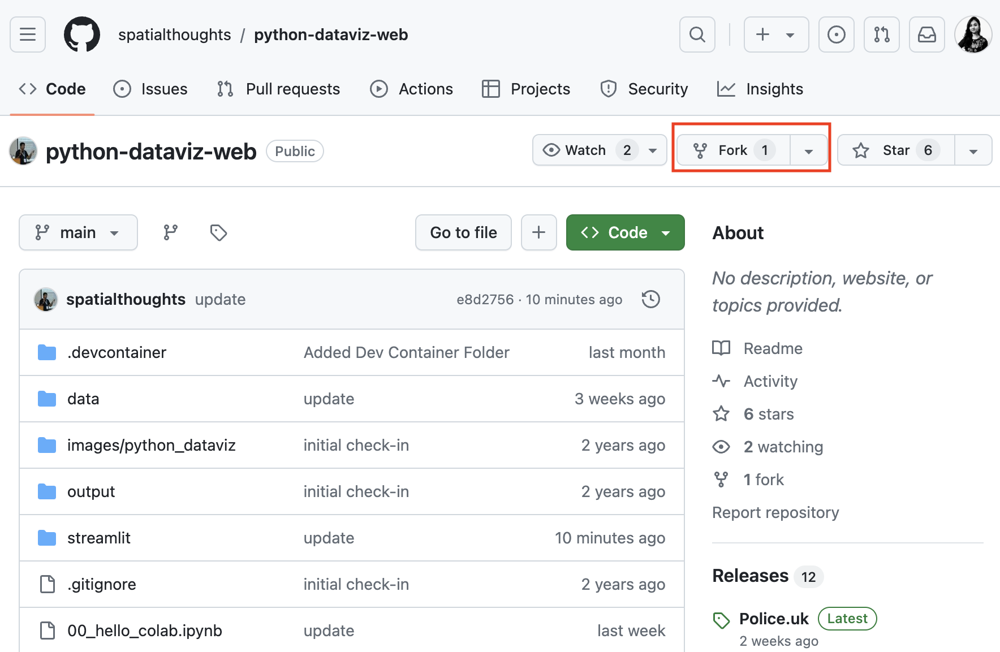
- Once done, find the app directory located at
streamlit/route_finder/inside your repository. Copy the path to theapp.py.
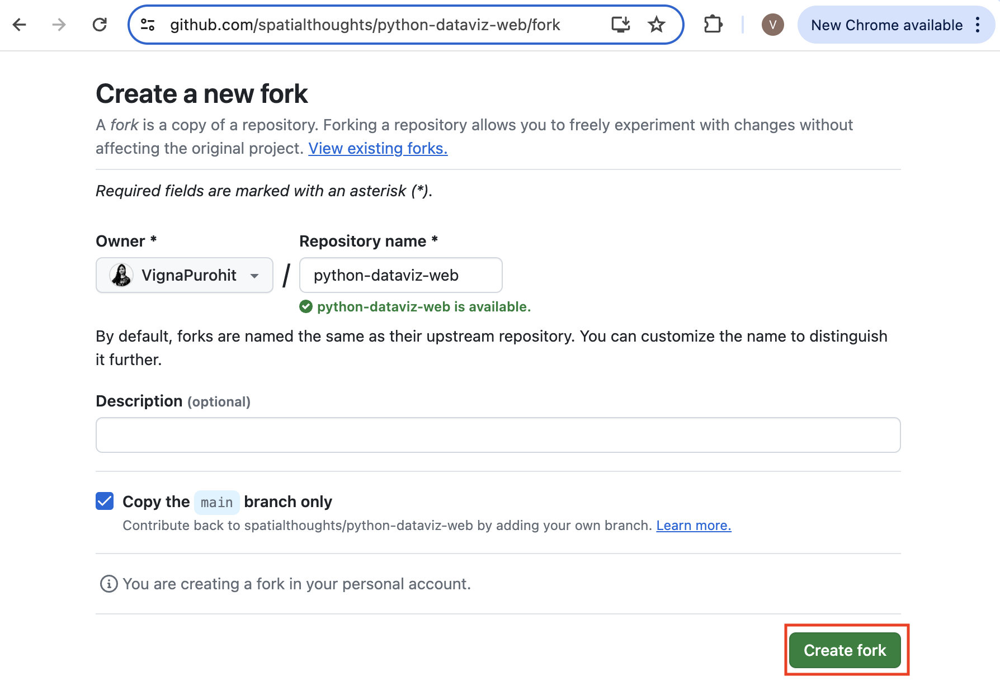
- Visit Streamlit Cloud and sign-in. If you do not have an account, you can click Sign-up and create a new account. Once logged-in, click the New app button.

- When prompted whether Do you already have an app?, choose
Yup, I have an app.
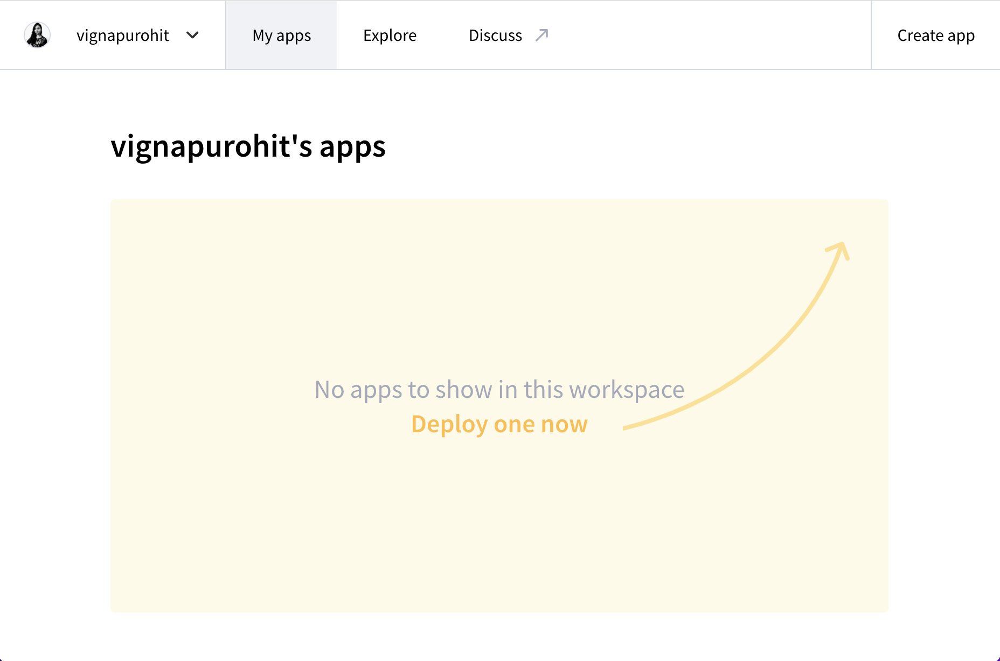
- Click Paste GitHub URL and paste the URL to your streamlit
app.pyfile. Next, click Advanced settings…
- This dialog allows you to store your private information required by your apps, such as API keys, username/password for your database, etc. For the Route Finder app, you need to enter the API Key for OpenRouteService. The API is maintained by HeiGIT (Heidelberg Institute for Geoinformation Technology). Visit HeiGIT Sign Up page and create an account. Once your account is activated, visit your Dashboard and copy the long string displayed under Basic Key and enter below.
. Enter your API key in the following format and replace
'ORS_API_KEY' = '<your key>'
- Optionally, you can choose a custom app URL. Once done, click Deploy!.
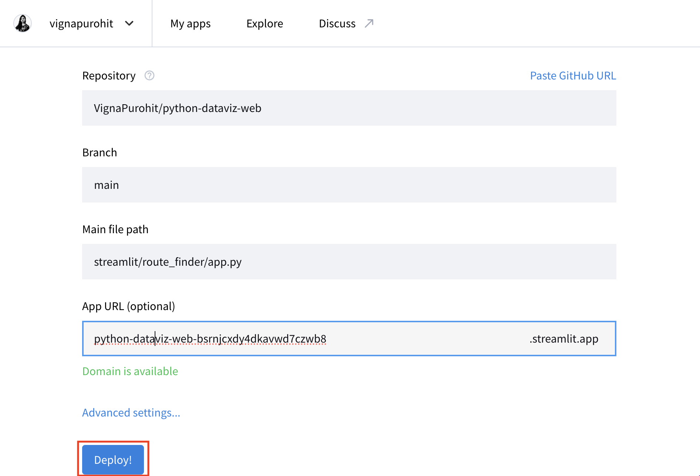
- Your app will now be deployed and will be accessible via the provided URL.
- You can visit your Dashboard to manage the app once it is deployed.
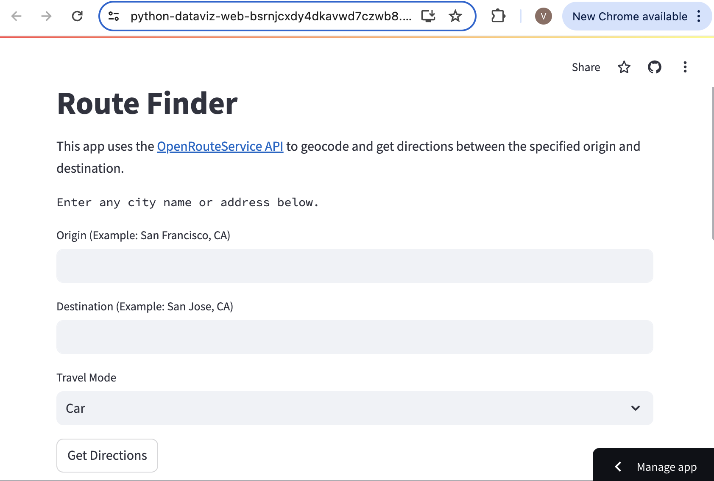
Supplement
Contextily

Creating an Artistic Rendering of a City
We can use basemap tiles from Stamen to create a high-resolution rendering of any city using the contextily library in Python.
Contextily provides an easy way to render tiles for a location using the OpenStreetMap’s Nominatim API. Any location name from OpenStreetMap can be geocoded and displayed using the Contextily Place API.
Setup
The following blocks of code will install the required packages and download the datasets to your Colab environment.
Procedure
Replace the place_name below with the name of your
chosen city, region or neighborhood and run it to query for its
coordinates and bounding box for OpenStreetMap. If your query fails, you
can visit OpenStreetMap and
search for it to find the exact spelling of the place.
You can choose from over 200 basemap styles created by different
providers. Check the available styles using
contextily.providers.
Let’s try the award-winning Watercolor
style by Stamen. Stamen basemaps are hosted by Stadia and require an API
key to use. You can sign-up and
obtain a free API key. Once done, replace YOUR-API-KEY
with your actual API key below.
source = cx.providers.Stadia.StamenWatercolor(api_key='YOUR-API-KEY')
source['url'] = source['url'] + '?api_key={api_key}'
zoom = 13place = Place(place_name, zoom=zoom, source=source)
fig, ax = plt.subplots(1, 1)
place.plot(ax=ax)
ax.set_axis_off()
plt.tight_layout()
plt.show()The Place API returns the rendering of the city based on its boundng box.
place = Place(place_name)
x_min, x_max, y_min, y_max = place.bbox_map
print('Original BBOX', x_min, x_max, y_min, y_max)If we wanted to create a rendering for exact dimensions, we have to adjust the default bounding box. Here we want to create a rendering that will fit exactly to the chosen paper size. We compute the required ratio and adjust the bounds so the resulting ratio matches our paper size.
# Here we are using A4 paper size in Portrait orientation
# Swap width and height for Landscape orientation
# or choose any other dimensions
paper_height = 11.69
paper_width = 8.27
ratio = paper_width/paper_height
x_size = x_max - x_min
y_size = y_max - y_min
if ratio > 0:
# adjust width
x_size_required = ratio*(y_max - y_min)
difference = x_size_required - x_size
x_min = x_min - difference/2
x_max = x_max + difference/2
else:
# adjust height
y_size_required = ratio*(x_max - x_min)
difference = y_size_required - y_size
y_min = y_min - difference/2
y_max = y_max + difference/2
print('Adjusted BBOX', x_min, x_max, y_min, y_max)Now we have the bounding box cooridnates, we can use the
bounds2img method to fetch the tiles and create a map. The
final rendering is saved as a PNG file in the Colab localstorage. You
can open the Files tab from the left-hand panel in
Colab and browse to the output folder. Locate the
basemap.png file and click the ⋮ button
and select Download to download the file locally.
Make sure to attribute the map correctly. The recommended attribution for Stamen Watercolor tiles is Map tiles by Stamen Design, under CC BY 4.0. Data by OpenStreetMap, under CC BY SA.
fig, ax = plt.subplots(1, 1)
fig.set_size_inches(paper_width, paper_height)
basemap, extent = cx.bounds2img(x_min, y_min, x_max, y_max, zoom=zoom, source=source)
ax.imshow(basemap, extent=extent)
ax.set_xlim(x_min, x_max)
ax.set_ylim(y_min, y_max)
ax.set_xticks([])
ax.set_yticks([])
plt.tight_layout(pad=0)
output_file = 'basemap.png'
output_path = os.path.join(output_folder, output_file)
plt.savefig(output_path, dpi=300, bbox_inches='tight')
plt.show()
Advanced Plotting

Using Matplotlib Themes and Custom Fonts
Matplotlib default style of plots is quite plain. You can easily improve the look of the charts by applying a pre-configured stylesheet. We can also use custom fonts to make our charts look more professional. This notebook shows how to apply the Seaborn theme along with many of the built-in Matplotlib themes to create aesthetically pleasing charts. We will also use the PyFonts module to load and use custom fonts.
Setup and Data Download
The following blocks of code will install the required packages and download the datasets to your Colab environment.
import matplotlib.pyplot as plt
import numpy as np
import os
import pandas as pd
import requests
import pyfontsdata_folder = 'data'
output_folder = 'output'
if not os.path.exists(data_folder):
os.mkdir(data_folder)
if not os.path.exists(output_folder):
os.mkdir(output_folder)def download(url):
filename = os.path.join(data_folder, os.path.basename(url))
if not os.path.exists(filename):
with requests.get(url, stream=True, allow_redirects=True) as r:
with open(filename, 'wb') as f:
for chunk in r.iter_content(chunk_size=8192):
f.write(chunk)
print('Downloaded', filename)We have 12 different CSV files containing crime data for each month of 2020. We download each of them to the data folder.
files = [
'2020-01-metropolitan-street.csv',
'2020-02-metropolitan-street.csv',
'2020-03-metropolitan-street.csv',
'2020-04-metropolitan-street.csv',
'2020-05-metropolitan-street.csv',
'2020-06-metropolitan-street.csv',
'2020-07-metropolitan-street.csv',
'2020-08-metropolitan-street.csv',
'2020-09-metropolitan-street.csv',
'2020-10-metropolitan-street.csv',
'2020-11-metropolitan-street.csv',
'2020-12-metropolitan-street.csv'
]
data_url = 'https://github.com/spatialthoughts/python-dataviz-web/releases/' \
'download/police.uk/'
for f in files:
url = os.path.join(data_url + f)
download(url)It will be helpful to merge all 12 CSV files into a single dataframe.
We can use pd.concat() to merge a list of dataframes.
Create a Bar Chart
We can also chart the trend of crime over the year. For this, let’s group the data by month.
# Use default style
plt.style.use('default')
fig, ax = plt.subplots(1, 1)
fig.set_size_inches(12,6)
bars = monthly_counts.plot(kind='bar', ax=ax)
ax.set_title('Total Crime by Month (Default Style)', loc='left', pad=20)
ax.set_xlabel('')
ax.set_ylabel('Total Incidents')
ax.set_xticks(np.arange(len(monthly_counts)))
# Extra: Add labels on bars
for bar in bars.patches:
height = bar.get_height()
ax.annotate(
height,
xy=(bar.get_x() + bar.get_width() / 2, height),
xytext=(0, 10),
fontsize=8,
textcoords="offset points", ha='center', va='bottom',
bbox=dict(facecolor='white', edgecolor='black', boxstyle='round'))
# Extra: Customize X-Axis labels
labels = []
for date in pd.to_datetime(monthly_counts.index):
labels.append(date.strftime('%b'))
ax.set_xticklabels(labels)
ax.spines['top'].set_visible(False)
ax.spines['right'].set_visible(False)
plt.tight_layout()
output_path = os.path.join(output_folder, 'default.png')
plt.savefig(output_path, dpi=300)
plt.show()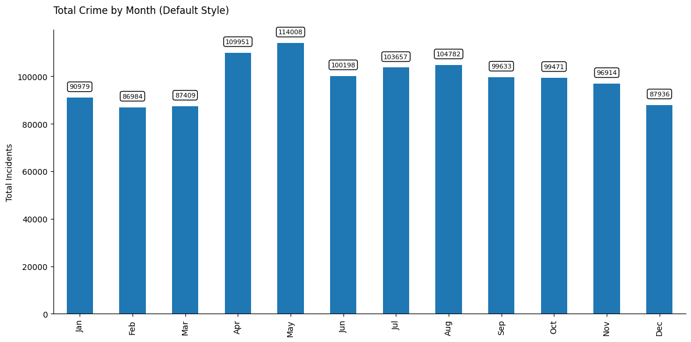
# Use seaborn style
import seaborn as sns
sns.set_theme()
fig, ax = plt.subplots(1, 1)
fig.set_size_inches(12,6)
bars = monthly_counts.plot(kind='bar', ax=ax)
ax.set_title('Total Crime by Month (Seaborn Style)', loc='left', pad=20)
ax.set_xlabel('')
ax.set_ylabel('Total Incidents')
ax.set_xticks(np.arange(len(monthly_counts)))
# Extra: Add labels on bars
for bar in bars.patches:
height = bar.get_height()
ax.annotate(
height,
xy=(bar.get_x() + bar.get_width() / 2, height),
xytext=(0, 10),
fontsize=8,
textcoords="offset points", ha='center', va='bottom',
bbox=dict(facecolor='white', edgecolor='black', boxstyle='round'))
# Extra: Customize X-Axis labels
labels = []
for date in pd.to_datetime(monthly_counts.index):
labels.append(date.strftime('%b'))
ax.set_xticklabels(labels)
ax.spines['top'].set_visible(False)
ax.spines['right'].set_visible(False)
plt.tight_layout()
output_path = os.path.join(output_folder, 'seaborn.png')
plt.savefig(output_path, dpi=300)
plt.show()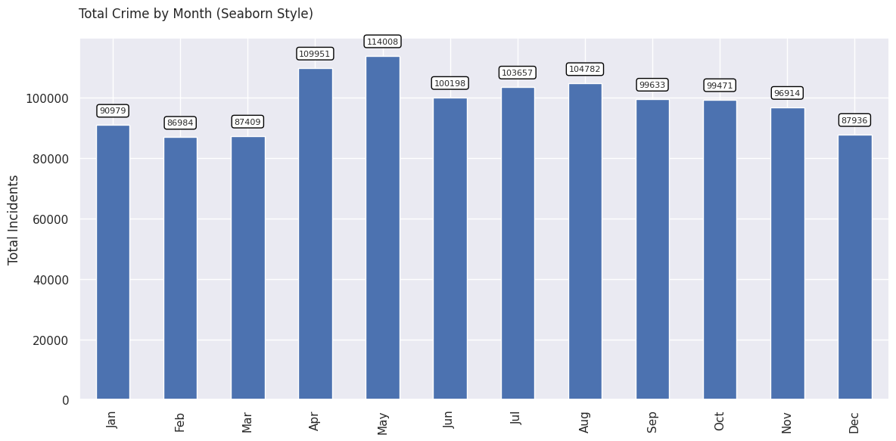
Matplotlib comes with many built-in themes. Let’s see what styles are available.
Google Fonts provides
open-source fonts that can be used on the web. The PyFonts package
allows us to load any of the font styles from Google Fonts using the
load_google_fonts() function.
regular = pyfonts.load_google_font('Roboto')
bold = pyfonts.load_google_font('Roboto', weight='bold')
italic = pyfonts.load_google_font('Roboto', italic=True)# Use ggplot style
plt.style.use('ggplot')
fig, ax = plt.subplots(1, 1)
fig.set_size_inches(12,6)
bars = monthly_counts.plot(kind='bar', ax=ax)
fig.text(x=0.13, y=0.95, s='Total Crime by Month ', size=20, font=bold)
fig.text(x=0.13, y=0.90, s='Using ggplot Theme + Custom Fonts', size=12, font=italic)
ax.set_xlabel('')
ax.set_ylabel('Total Incidents', font=regular, size=12)
ax.set_xticks(np.arange(len(monthly_counts)))
# Extra: Add labels on bars
for bar in bars.patches:
height = bar.get_height()
ax.annotate(
height,
xy=(bar.get_x() + bar.get_width() / 2, height),
xytext=(0, 10),
fontsize=8,
font=regular,
textcoords="offset points", ha='center', va='bottom',
bbox=dict(facecolor='white', edgecolor='black', boxstyle='round'))
# Customize X-Axis labels
labels = []
for date in pd.to_datetime(monthly_counts.index):
labels.append(date.strftime('%b'))
ax.set_xticklabels(labels, font=regular)
# Customize Y-Axis labels
for label in ax.get_yticklabels():
label.set_fontproperties(regular)
ax.spines['top'].set_visible(False)
ax.spines['right'].set_visible(False)
output_path = os.path.join(output_folder, 'ggplot.png')
plt.savefig(output_path, dpi=300)
plt.show()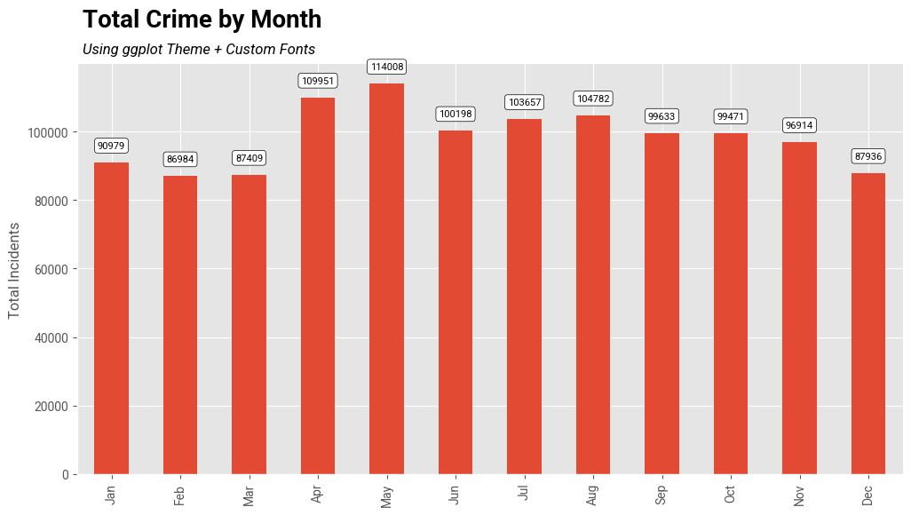

Creating A Stacked Bar Chart
This example shows how to create a stacked chart with information about crime type in each bar. This visualization can plot 2 variables in a single plot.
Setup and Data Download
The following blocks of code will install the required packages and download the datasets to your Colab environment.
Data Pre-Processing
data_folder = 'data'
output_folder = 'output'
if not os.path.exists(data_folder):
os.mkdir(data_folder)
if not os.path.exists(output_folder):
os.mkdir(output_folder)def download(url):
filename = os.path.join(data_folder, os.path.basename(url))
if not os.path.exists(filename):
with requests.get(url, stream=True, allow_redirects=True) as r:
with open(filename, 'wb') as f:
for chunk in r.iter_content(chunk_size=8192):
f.write(chunk)
print('Downloaded', filename)We have 12 different CSV files containing crime data for each month of 2020. We download each of them to the data folder.
files = [
'2020-01-metropolitan-street.csv',
'2020-02-metropolitan-street.csv',
'2020-03-metropolitan-street.csv',
'2020-04-metropolitan-street.csv',
'2020-05-metropolitan-street.csv',
'2020-06-metropolitan-street.csv',
'2020-07-metropolitan-street.csv',
'2020-08-metropolitan-street.csv',
'2020-09-metropolitan-street.csv',
'2020-10-metropolitan-street.csv',
'2020-11-metropolitan-street.csv',
'2020-12-metropolitan-street.csv'
]
data_url = 'https://github.com/spatialthoughts/python-dataviz-web/releases/' \
'download/police.uk/'
for f in files:
url = os.path.join(data_url + f)
download(url)It will be helpful to merge all 12 CSV files into a single dataframe.
We can use pd.concat() to merge a list of dataframes.
dataframe_list = []
for f in files:
filepath = os.path.join(data_folder, f)
df = pd.read_csv(filepath)
dataframe_list.append(df)
merged_df = pd.concat(dataframe_list)The result is not in a suitable format for plotting. We call
unstack() to create a dataframe.
Creating a Chart
The default chart is not stacked. i.e. we get separate bars for each crime type.
fig, ax = plt.subplots(1, 1)
fig.set_size_inches(20,10)
counts_df.plot(
kind='bar', ax=ax, colormap='tab20')
ax.set_ylabel('Number of Incidents', size = 15)
ax.set_title('Crime in London (2020)', size = 18, y=1.1)
plt.show()
We can set stacked=True for a stacked bar chart.
fig, ax = plt.subplots(1, 1)
fig.set_size_inches(20,10)
counts_df.plot(
kind='bar', ax=ax, colormap='tab20', stacked=True)
ax.set_ylabel('Number of Incidents', size = 15)
ax.set_title('Crime in London (2020)', size = 18, y=1.1)
plt.show()
We can make some final adjustments to the plot and create a horizontal legend with a frame.
legend_kwds= {
'loc': 'upper center',
'ncols': 5,
'bbox_to_anchor': (0.5, 1.1),
'fancybox': True,
'shadow': True
}
fig, ax = plt.subplots(1, 1)
fig.set_size_inches(20,10)
# We can chain .plot() and .legend() together
counts_df \
.plot(kind='bar', stacked=True, ax=ax, colormap='tab20') \
.legend(**legend_kwds)
# Hide the top and right spines
ax.spines['right'].set_visible(False)
ax.spines['top'].set_visible(False)
ax.set_ylabel('Number of Incidents', size = 15)
ax.set_title('Crime in London (2020)', size = 18, y=1.1)
output_folder = 'output'
output_path = os.path.join(output_folder, 'stacked_chart.jpg')
plt.savefig(output_path)
plt.show()

Elevation Profile Plot from a GPS Track
We will take a GPS track for a mountain trek recorded from Strava app and create an elevation profile plot. We also explore some advanced charting functions to add labels on X-axis at precise time intervals.
Setup and Data Download
The following blocks of code will install the required packages and download the datasets to your Colab environment.
import geopandas as gpd
import matplotlib.pyplot as plt
import matplotlib.dates as mdates
import os
import pandas as pd
import requestsdata_folder = 'data'
output_folder = 'output'
if not os.path.exists(data_folder):
os.mkdir(data_folder)
if not os.path.exists(output_folder):
os.mkdir(output_folder)Data Pre-Processing
gpx_path = os.path.join(data_folder, filename)
# GPX files contain many layers. Read the 'track_points' layer
gdf = gpd.read_file(gpx_path, layer='track_points')
gdf = gdf[['track_fid','ele', 'time', 'geometry']]
gdfLet’s use the timestamp contained in the ‘time’ column as the index. This will allow us to filter and plot the time-series data easily. We must first convert the time column to datetime type with an appropriate timezone.
gdf['time'] = pd.to_datetime(gdf['time'])
gdf = gdf.set_index('time')
gdf.index = gdf.index.tz_convert('Asia/Kolkata')
gdfUsing time as index allows us to filter the data as follows
We can now plot the elevation against the timestamp using Matplotlib.
Since we have a large number of timestamps, we can use
set_major_locator() to define what labels will be present
on the axis.
Since our timestamps are timezone aware, we can also plot a timezone name (i.e. IST) along with the label.
We can also use a different style for our plot. You can run
plt.style.available to see all available styles.
fig, ax = plt.subplots(1, 1)
fig.set_size_inches(15,7)
# We show a subset of track for the summit in a blue line
gdf_subset['ele'].plot(kind='line', ax=ax, color='#2b8cbe')
# The full track is shown with a grey fill
ax.fill_between(gdf.index, gdf['ele'].values, color='grey', alpha=0.3)
plt.tight_layout()
plt.title('Elevation Profile', fontsize = 18)
plt.ylabel('Elevation (meters)', size = 15)
plt.xlabel(None)
# Show a tick every 30 minute
xlocator = mdates.MinuteLocator(interval=30)
xformat = mdates.DateFormatter('%H:%M %Z', tz=gdf.index.tz)
ax.xaxis.set_major_locator(xlocator)
ax.xaxis.set_major_formatter(xformat)
ax.set_ylim([3200, 3700])
plt.show()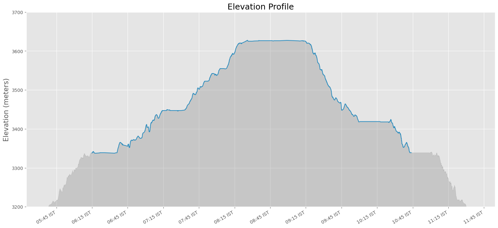

Creating a Globe Visualization
This notebook shows how how to take a shapefile showing the path of the 2017 Solar Eclipse and create a globe visualization.
Setup and Data Download
The following blocks of code will install the required packages and download the datasets to your Colab environment.
import cartopy
import cartopy.crs as ccrs
import geopandas as gpd
import matplotlib.pyplot as plt
import os
import requests
import rioxarray as rxr
import shapely
import zipfiledata_folder = 'data'
output_folder = 'output'
if not os.path.exists(data_folder):
os.mkdir(data_folder)
if not os.path.exists(output_folder):
os.mkdir(output_folder)def download(url):
filename = os.path.join(data_folder, os.path.basename(url))
if not os.path.exists(filename):
with requests.get(url, stream=True, allow_redirects=True) as r:
with open(filename, 'wb') as f:
for chunk in r.iter_content(chunk_size=8192):
f.write(chunk)
print('Downloaded', filename)# Get the eclipse shapefiles
path_shapefile = 'upath17'
umbra_shapefile = 'umbra17'
penumbra_shapefile = 'penum17'
shapefile_exts = ['.shp', '.shx', '.dbf', '.prj']
data_url = 'https://github.com/spatialthoughts/python-dataviz-web/releases/' \
'download/eclipse/'
for shapefile in [path_shapefile, umbra_shapefile, penumbra_shapefile]:
for ext in shapefile_exts:
url = data_url + shapefile + ext
download(url)
# Get the Blue Marble basemap image
data_url = 'https://github.com/spatialthoughts/python-dataviz-web/releases/' \
'download/bluemarble/'
basemap_file = 'eo_base_2020_clean_geo_resampled.tif'
download(data_url + basemap_file)Data Pre-Processing
path_shapefile_path = os.path.join(
data_folder, path_shapefile + '.shp')
umbra_shapefile_path = os.path.join(
data_folder, umbra_shapefile + '.shp')
penumbra_shapefile_path = os.path.join(
data_folder, penumbra_shapefile + '.shp')
path_gdf = gpd.read_file(path_shapefile_path)
umbra_gdf = gpd.read_file(umbra_shapefile_path)
penumbra_gdf = gpd.read_file(penumbra_shapefile_path)Choose a Orthographic Projection centered on the continental USA. Convert the CartoPy projection to a GeoPandas projection and reproject the data layers.
cartopy_crs = ccrs.Orthographic(-100, 45)
crs= cartopy_crs.proj4_init
# Reproject using GeoPandas
# CartoPy reprojection on-the-fly while plotting results in artifacts
penumbra_gdf_reprojected = penumbra_gdf.to_crs(crs)
umbra_gdf_reprojected = umbra_gdf.to_crs(crs)
path_gdf_reprojected = path_gdf.to_crs(crs)Read the Blue Marble basemap image
Create a Globe Visualization
fig, ax = plt.subplots(1, 1, subplot_kw={'projection': cartopy_crs})
fig.set_size_inches(8, 8)
# Plot the basemap
basemap_ds.plot.imshow(
ax=ax,
transform=ccrs.PlateCarree(),
robust=True)
# Plot the DataFrames
# Plot penumbra shadows with just fills
penumbra_gdf_reprojected.plot(
ax=ax,
column='Obscur',
cmap='Greys',
edgecolor='none',
alpha=0.2
)
# Plot penumbra shadows with outlines
penumbra_gdf_reprojected.plot(
ax=ax,
column='Obscur',
cmap='Greys',
linewidth=1,
facecolor='none',
alpha=0.5
)
path_gdf_reprojected.to_crs(crs).plot(
ax=ax,
facecolor='#636363',
edgecolor='none',
alpha=0.5,
)
umbra_gdf_reprojected.to_crs(crs).plot(
ax=ax,
facecolor='#252525',
edgecolor='none')
plt.title('2017 Total Solar Eclipse Path', fontsize=14)
plt.show()

Visualizing Monthly Composites
This notebook shows how to aggregate a time-series of satellite imagery to monthly median composites and visualize them in a grid.
Setup and Data Download
The following blocks of code will install the required packages and download the datasets to your Colab environment.
%%capture
if 'google.colab' in str(get_ipython()):
!pip install pystac-client odc-stac rioxarray daskGet Satellite Imagery using STAC API
We define a location and time of interest to get some satellite imagery.
Let’s use Element84 search endpoint to look for items from the sentinel-2-l2a collection on AWS.
catalog = pystac_client.Client.open(
'https://earth-search.aws.element84.com/v1')
# Define a small bounding box around the chosen point
km2deg = 1.0 / 111
x, y = (longitude, latitude)
r = 1 * km2deg # radius in degrees
bbox = (x - r, y - r, x + r, y + r)
search = catalog.search(
collections=['sentinel-2-c1-l2a'],
bbox=bbox,
datetime=f'{year}',
query={'eo:cloud_cover': {'lt': 30}},
)
items = search.item_collection()Load the matching images as a XArray Dataset.
ds = stac_load(
items,
bands=['red', 'green', 'blue', 'nir'],
resolution=10,
bbox=bbox,
chunks={}, # <-- use Dask
groupby='solar_day',
)
dsCPU times: user 12.3 s, sys: 24.4 s, total: 36.7 s
Wall time: 1min 31sVisualizing Monthly Composites
Aggregate it to a monthly median composites groupby()
method.
Using monthly_da to display composites for all months.
monthly_da = monthly.to_array('band')
fig, axes = plt.subplots(4, 3)
fig.set_size_inches(9, 12)
for index, ax in enumerate(axes.flat):
month_da = monthly_da.isel(month=index)
month_da.sel(band=['red', 'green', 'blue']).plot.imshow(
ax=ax,
vmin=0,
vmax=3000)
ax.set_title(f'{month_da.month.values}')
ax.set_axis_off()
plt.tight_layout()
plt.show()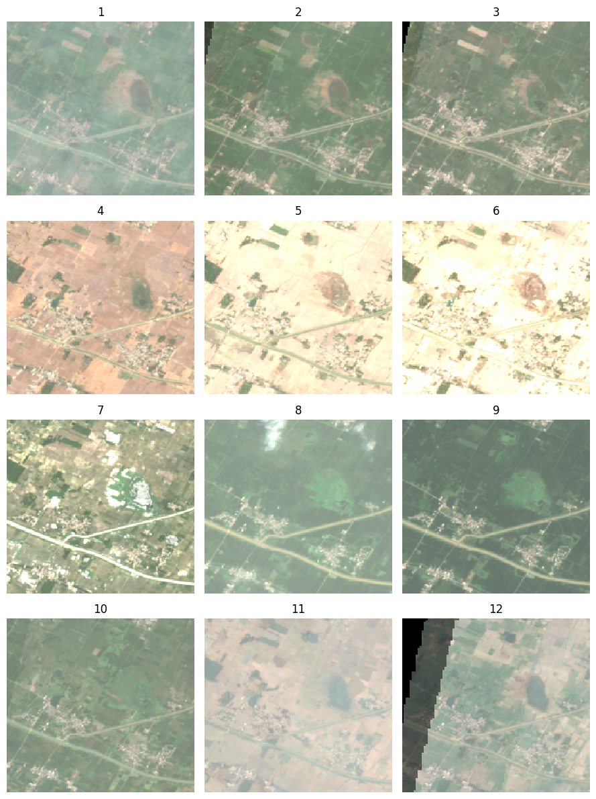

Creating Maps with Cartographic Elements
This notebook shows how to use the EOMaps library to create maps with cartographic elements such as north arrow, scalebar and gridlines.
Setup and Data Download
The following blocks of code will install the required packages and download the datasets to your Colab environment.
from eomaps import Maps
import geopandas as gpd
import matplotlib.pyplot as plt
import os
import pandas as pd
import requestsdata_folder = 'data'
output_folder = 'output'
if not os.path.exists(data_folder):
os.mkdir(data_folder)
if not os.path.exists(output_folder):
os.mkdir(output_folder)def download(url):
filename = os.path.join(data_folder, os.path.basename(url))
if not os.path.exists(filename):
with requests.get(url, stream=True, allow_redirects=True) as r:
with open(filename, 'wb') as f:
for chunk in r.iter_content(chunk_size=8192):
f.write(chunk)
print('Downloaded', filename)shapefile_name = 'tl_2019_06_tract'
shapefile_exts = ['.shp', '.shx', '.dbf', '.prj']
data_url = 'https://github.com/spatialthoughts/python-dataviz-web/releases/' \
'download/census/'
for ext in shapefile_exts:
url = data_url + shapefile_name + ext
download(url)
csv_name = 'ACSST5Y2019.S0101_data.csv'
download(data_url + csv_name)Data Pre-Processing
Read the data and perform a table join.
shapefile_path = os.path.join(data_folder, shapefile_name + '.shp')
tracts = gpd.read_file(shapefile_path)
csv_path = os.path.join(data_folder, csv_name)
table = pd.read_csv(csv_path, skiprows=[1])
filtered = table[['GEO_ID','NAME', 'S0101_C01_001E']]
filtered = filtered.rename(columns = {'S0101_C01_001E': 'Population', 'GEO_ID': 'GEOID'})
filtered['GEOID'] = filtered.GEOID.str[-11:]
gdf = tracts.merge(filtered, on='GEOID')
gdf['density'] = 1e6*gdf['Population']/gdf['ALAND']
gdfCreate a Map using EOMaps
Initialize a map with a CRS.
Reference: eomaps.Maps()
Set the map extent.
xmin, ymin, xmax, ymax = gdf.total_bounds
buffer = 0.25
m.set_extent([xmin-buffer, xmax+buffer, ymin-buffer, ymax+buffer])Add the gridlines.
Reference: eomaps.Maps.add_gridlines()
g = m.add_gridlines(1, lw=0.25, alpha=0.5, zorder=0)
gl = g.add_labels(fontsize=8, every = 2)
m.show()Add North Arrow.
Reference: eomaps.Maps.add_compass()
Add scalebar.
Reference: eomaps.Maps.add_scalebar()
s = m.add_scalebar(
n=4,
scale=50000,
auto_position=(0.05,0.08),
preset='bw',
rotation=90,
label_props={'rotation':90, 'offset':1.5, 'weight':0.5},
scale_props={'colors': ('k','#bdbdbd','k','#bdbdbd','k')},
line_props={'lw':0, 'ls': 'solid'}
)
m.show()Plot the GeoDataFrame.
legend_kwds= {
'loc': 'upper right',
'bbox_to_anchor': (0.97, 0.80),
'fmt': '{:<5.0f}',
'frameon': True,
'fontsize': 8,
'title': 'persons/sq.km.'
}
classification_kwds={
'bins':[1,10,25,50,100, 250, 500, 1000, 5000]
}
m.add_gdf(gdf, column='density', cmap='RdYlGn_r', scheme='User_Defined',
classification_kwds=classification_kwds,
legend=True, legend_kwds=legend_kwds)
# Change the last entry in the legend to '>5000'
m.ax.get_legend().texts[-1].set_text('> 5000')
m.add_title('California Population Density (2019)', y=0.97)
m.show()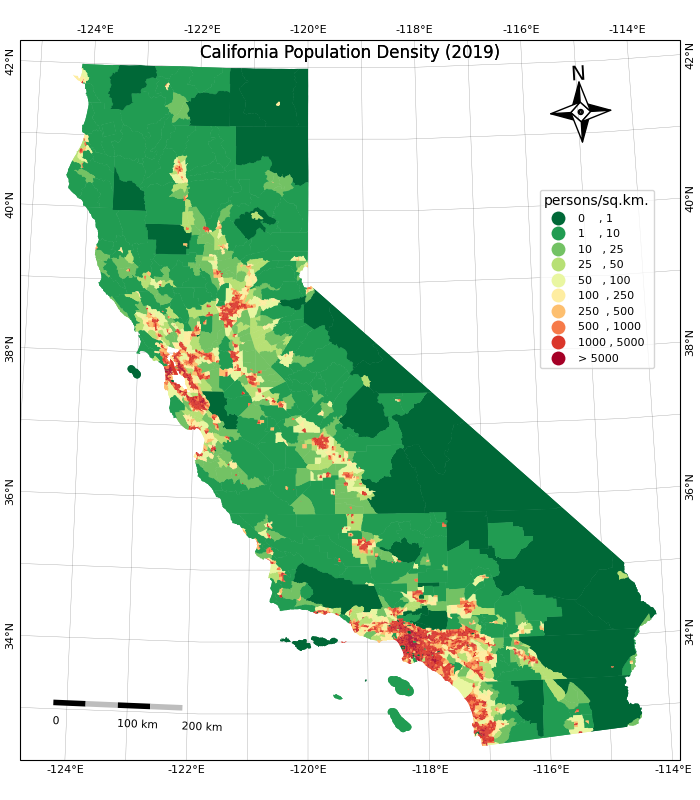
<Figure size 640x480 with 0 Axes>Save the map.
output_folder = 'output'
output_path = os.path.join(output_folder, 'map.png')
m.savefig(output_path, dpi=200)
Labeling Features
This example shows how to add labels to vector layer features using Matplotlib. We will take a polygon layer of districts and add an annotation to show the district name at the centroid of each polygon.
Setup and Data Download
data_folder = 'data'
output_folder = 'output'
if not os.path.exists(data_folder):
os.mkdir(data_folder)
if not os.path.exists(output_folder):
os.mkdir(output_folder)Data Pre-Processing
We read the districts layer from the input geopackage
using GeoPandas.
path = os.path.join(data_folder, filename)
districts_gdf = gpd.read_file(path, layer='karnataka_districts')Let’s say we want to add a label for each of the distrit polygons.
First, we need to decide the anchor position of the label. We can use
representative_point() to get a point inside each polygon
that best represents the geometry. It is similar to a centroid, but is
guranteed to be inside the polygon. Below code creates a new field in
the GeoDataFrame called label_position with the coordinates
of the anchor point.
def get_label_position(row):
geometry = row['geometry']
location = geometry.representative_point()
# We need the location as a tuple of x,y coordinates
location_coords = location.coords[0]
return location_coords
districts_gdf['label_position'] = districts_gdf.apply(get_label_position, axis=1)
districts_gdfAnnotating Labels
We can now plot the districts and add an annotation for each polygon.
We iterate over each row of the GeoDataFrame and add the annotation with
name of the district at its centroid coordinates using
annotate() function.
fig, ax = plt.subplots(1, 1)
fig.set_size_inches(10,15)
districts_gdf.plot(ax=ax, linewidth=1, facecolor='none', edgecolor='#252525')
for idx, row in districts_gdf.iterrows():
ax.annotate(text=row['DISTRICT'], xy=row['label_position'], horizontalalignment='center')
ax.set_axis_off()
plt.tight_layout()
plt.show()


Creating Time-Series Charts
import pandas as pd
import os
import matplotlib.pyplot as plt
import matplotlib.dates as mdates
import requestsdata_folder = 'data'
output_folder = 'output'
if not os.path.exists(data_folder):
os.mkdir(data_folder)
if not os.path.exists(output_folder):
os.mkdir(output_folder)def download(url):
filename = os.path.join(data_folder, os.path.basename(url))
if not os.path.exists(filename):
with requests.get(url, stream=True, allow_redirects=True) as r:
with open(filename, 'wb') as f:
for chunk in r.iter_content(chunk_size=8192):
f.write(chunk)data_url = 'https://github.com/spatialthoughts/python-dataviz-web/releases/' \
'download/misc/'
filename = 'ndvi_data.xlsx'
download(data_url + filename)Data Pre-Processing
We set the ‘Date’ column as the index of the dateframe. This will allow us to filter and plot the time-series data easily.
Create a chart with time-series of values in the ‘NDVI’ column. We
use mdates module to control the tick-marks on X-Axis.
fig, ax = plt.subplots(1, 1)
fig.set_size_inches(20,10)
df.plot(y='NDVI', kind='line', ax=ax,
marker='o', markersize=2, color='#238b45',
label='Original NDVI')
ax.xaxis.set_major_locator(mdates.MonthLocator(interval=6))
ax.xaxis.set_major_formatter(mdates.DateFormatter("%Y-%m"))
ax.grid('on')
ax.set_title('NDVI Time-Series')
ax.set_ylabel('NDVI')
# Save the plot
output_folder = 'output'
output_path = os.path.join(output_folder, 'ndvi_time_series.png')
plt.savefig(output_path)
plt.show()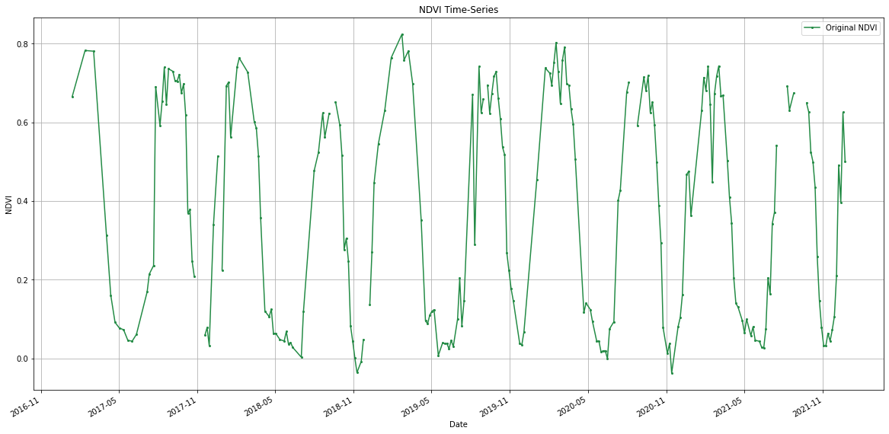
Time Series Smoothing with Moving Average
Pandas has built-in method rolling() to allow us to
compute moving averages. Let’s smooth the time-series with a
moving-window average.
window_size_days = 30
window = '{}D'.format(window_size_days)
df_smooth = df.copy()
df_smooth['NDVI_smooth'] = df_smooth['NDVI'].rolling(window, center=True).mean()
df_smoothfig, ax = plt.subplots(1, 1)
fig.set_size_inches(20,10)
df_smooth.plot(y='NDVI', kind='line', ax=ax,
marker='o', markersize=1, color='#66c2a4', linestyle='dotted',
label='Original')
df_smooth.plot(y='NDVI_smooth', kind='line', ax=ax,
marker='o', linewidth= 2, markersize=0, color='#238b45',
label='{} Day Moving-Average'.format(window_size_days))
ax.xaxis.set_major_locator(mdates.MonthLocator(interval=6))
ax.xaxis.set_major_formatter(mdates.DateFormatter("%Y-%m"))
ax.grid('on')
ax.set_title('NDVI Time-Series')
ax.set_ylabel('NDVI')
# Save the plot
output_folder = 'output'
output_path = os.path.join(output_folder, 'smooth_ndvi_time_series.png')
plt.savefig(output_path)
plt.show()

Feature Correlation Matrix
Correlation Matrix is used in Machine Learning to identify redudant features that are correlated. We will take a table of feature samples generated from a multiband image and create a correlation matrix. This matrix is used to identify and visualize patterns in the given data and select features for a machine learning model.
Setup and Data Download
The following blocks of code will install the required packages and download the datasets to your Colab environment.
data_folder = 'data'
output_folder = 'output'
if not os.path.exists(data_folder):
os.mkdir(data_folder)
if not os.path.exists(output_folder):
os.mkdir(output_folder)Data Pre-Processing
We use Pandas’ pd.DataFrame.corr()
method to calculate pairwise Pearson’s Correlation Coefficient for each
variable.
Plotting using Matplotlib
We can use Matplotlib’s matplotlib.pyplot.matshow
to display any array as a matrix.
fig, ax = plt.subplots(1, 1)
fig.set_size_inches(18,18)
im = ax.matshow(correlations, vmin=-1, vmax=1)
fig.colorbar(im, shrink=0.8)
ticks = np.arange(0,len(table.columns),1)
ax.set_xticks(ticks)
ax.set_yticks(ticks)
ax.set_xticklabels(table.columns)
ax.set_yticklabels(table.columns)
output_folder = 'output'
output_path = os.path.join(output_folder, 'correlation_matrix.png')
plt.savefig(output_path, dpi=300)
plt.show()
Matplotlib Anatomy
This notebook creates the figures showing the anatomy of a matplotlib plot. It is also a good reference showing how to create annotations with callouts and curved arrows.
Setup and Data Download
The following blocks of code will install the required packages and download the datasets to your Colab environment.
import os
import rioxarray as rxr
from rioxarray.merge import merge_arrays
import matplotlib.pyplot as plt
import matplotlib.patches as patchesdata_folder = 'data'
output_folder = 'output'
if not os.path.exists(data_folder):
os.mkdir(data_folder)
if not os.path.exists(output_folder):
os.mkdir(output_folder)def download(url):
filename = os.path.join(data_folder, os.path.basename(url))
if not os.path.exists(filename):
from urllib.request import urlretrieve
local, _ = urlretrieve(url, filename)
print('Downloaded ' + local)
srtm_tiles = [
'N27E086.hgt',
'N27E087.hgt',
'N28E086.hgt',
'N28E087.hgt'
]
data_url = 'https://github.com/spatialthoughts/python-dataviz-web/releases/' \
'download/srtm/'
for tile in srtm_tiles:
url = '{}/{}'.format(data_url, tile)
download(url)Creating a Figure with Multiple Axes and Frame
datasets = []
for tile in srtm_tiles:
path = os.path.join(data_folder, tile)
rds = rxr.open_rasterio(path)
band = rds.sel(band=1)
datasets.append(band)fig, axes = plt.subplots(2, 2,edgecolor='black')
fig.set_size_inches(7,7)
for index, ax in enumerate(axes.flat):
da = datasets[index]
im = da.plot.imshow(
ax=ax, cmap='Greys_r',
vmin=1000, vmax=8000,
add_colorbar=False)
filename = srtm_tiles[index]
ax.tick_params(axis='both', which='major', labelsize=7)
ax.set_title(filename,fontsize=9)
ax.set_xlabel('',fontsize = 7)
ax.set_ylabel('',fontsize = 7)
if index in [0, 2]:
ax.set_ylabel('latitude',fontsize = 7)
if index in [2, 3]:
ax.set_xlabel('longitude',fontsize = 7)
ax.set_aspect('equal') # maintain aspect ratio
plt.suptitle('SRTM 30m Elevation Tiles', fontsize=12)
# Add a frame
frame = patches.Rectangle((-0.02, -0.02), 1.04, 1.04,
transform=fig.transFigure,
edgecolor='black',
facecolor='none',
linewidth=1.5)
fig.patches.append(frame)
# Create a new axes for the colorbar at the bottom spanning two axes
# [left, bottom, width, height] in figure coordinates
cax = fig.add_axes([0.25, 0.02, 0.5, 0.03])
cbar = fig.colorbar(im, cax=cax, orientation='horizontal')
cbar.ax.tick_params(labelsize=7) # Set fontsize of colorbar labels
plt.show()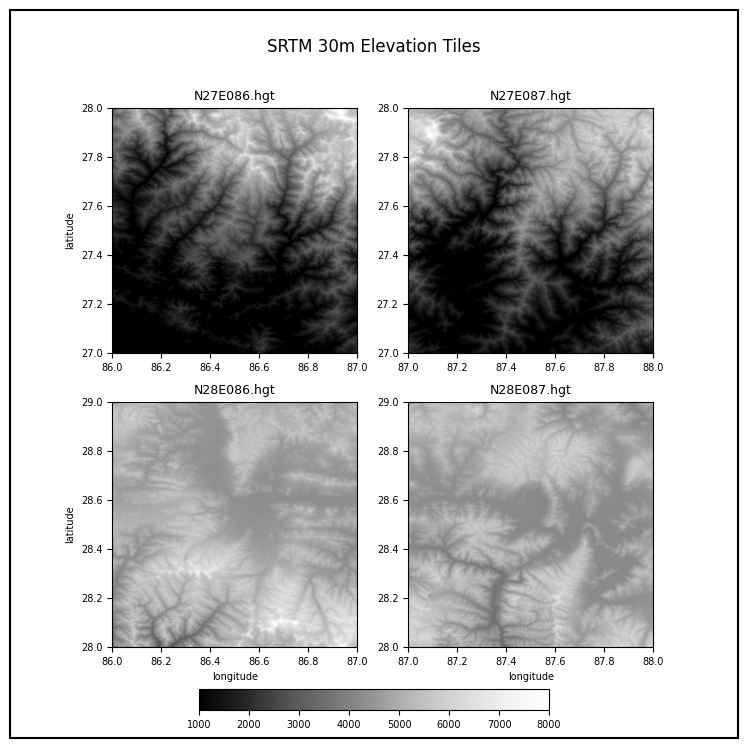
Adding Arrow Annotations
We create a helper function to add labels with curved arrows using FancyArrowPatch.
def add_annotation(fig, title_text, arrow_start_coords, arrow_end_coords):
"""
Adds a title annotation with an arrow pointing to it on the given figure.
Parameters:
- fig: The Matplotlib figure to add the annotation to.
- title_text: The text of the title annotation.
- arrow_start_coords: Tuple (x, y) for the starting position
of the arrow outside the frame in normalized figure coordinates.
- arrow_end_coords (title_coords): Tuple (x, y) for the end position
of the arrow in normalized figure coordinates.
- arrow_color: The color of the arrow.
"""
arrow_start_x, arrow_start_y = arrow_start_coords
arrow_end_x, arrow_end_y = arrow_end_coords
bbox_props = {
'boxstyle':'round,pad=0.3',
'edgecolor':'black',
'facecolor':'white'}
arrowstyle='-|>'
arrow_color='blue'
connectionstyle='arc3,rad=-.2'
mutation_scale=15
mutation_aspect=1
linewidth=1
# Create and add the arrow
arrow = patches.FancyArrowPatch(
(arrow_start_x, arrow_start_y),
(arrow_end_x, arrow_end_y),
connectionstyle=connectionstyle,
transform=fig.transFigure,
color=arrow_color,
arrowstyle=arrowstyle,
mutation_scale=mutation_scale,
mutation_aspect=mutation_aspect,
linewidth=linewidth
)
fig.patches.append(arrow)
# Add the title annotation with bounding box at the end of the arrow
fig.text(
arrow_start_x,
arrow_start_y,
title_text,
ha='center',
va='center',
fontsize=12,
bbox=bbox_props
)Create a plot showing different parts of a matplotlib figure.
fig, axes = plt.subplots(2, 2,edgecolor='black')
fig.set_size_inches(7.5, 7.5)
for index, ax in enumerate(axes.flat):
da = datasets[index]
im = da.plot.imshow(ax=ax, cmap='Greys_r',add_colorbar=False)
filename = srtm_tiles[index]
ax.margins(0.2) # Add padding around the axes
ax.tick_params(axis='both', which='major', labelsize=7)
ax.set_title('')
ax.set_xlabel('longitude',fontsize = 7)
ax.set_ylabel('latitude',fontsize = 7)
ax.set_aspect('equal') # maintain aspect ratio
plt.suptitle('SRTM 30m Elevation Tiles', fontsize=12)
plt.tight_layout()
# Add a frame
frame = patches.Rectangle((0, 0), 1, 1,
transform=fig.transFigure,
edgecolor='black',
facecolor='none',
linewidth=1.5)
fig.patches.append(frame)
output_path = os.path.join(output_folder, 'frame.png')
plt.savefig(output_path, dpi=300, bbox_inches='tight')
# Define the titles and arrow positions
# Tile Text, Arrow Start Coords and Arrow End Coords
annotations = [
('Figure', (1.15, 0.95), (0.9, 1.0)),
('Axes', (1.15, 0.8), (0.75, 0.8)),
('Axes', (1.15, 0.8), (0.25, 0.8)),
('Axes', (1.15, 0.8), (0.75, 0.3)),
('Axes', (1.15, 0.8), (0.25, 0.3)),
('Y-Axis', (-0.15, 0.85), (0.07, 0.80)),
('X-Axis', (-0.15, 0.65), (0.38, 0.52)),
('Y-Label', (-0.15, 0.75), (0.02, 0.72)),
('X-Label', (-0.15, 0.55), (0.25, 0.5)),
('Y-Ticks', (1.15, 0.3), (0.56, 0.22)),
('X-Ticks', (1.15, 0.2), (0.82, 0.05)),
('Spines', (-0.15, 0.2), (0.2, 0.46)),
('Spines', (-0.15, 0.2), (0.48, 0.2)),
]
# We apply the annotations and also save a series of images
# showing the addition of different elements
for title_text, arrow_start_coords, arrow_end_coords in annotations:
add_annotation(fig=fig,
title_text=title_text ,
arrow_start_coords=arrow_start_coords,
arrow_end_coords=arrow_end_coords)
output_path = os.path.join(output_folder, title_text.lower())
plt.savefig(output_path, dpi=300, bbox_inches='tight')
plt.show()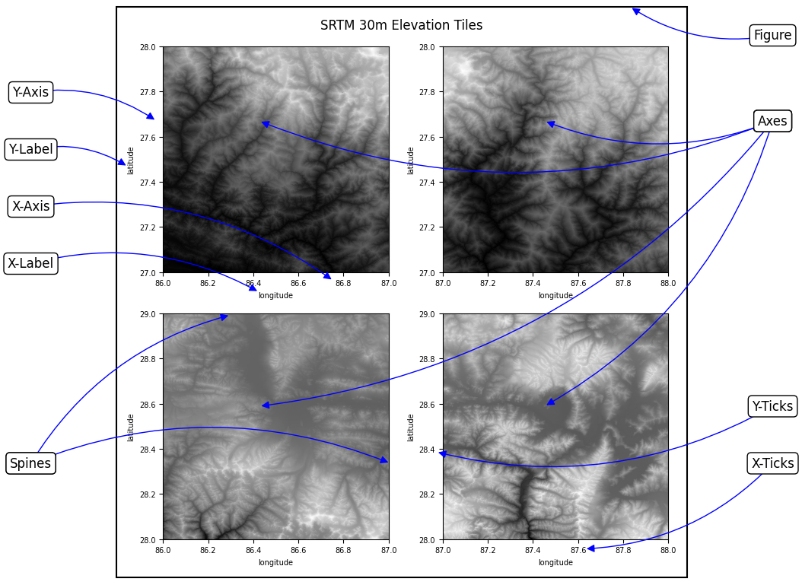
Animation

Creating Animated Maps
We take the dataset for 2017 solar eclipse and animate the path of the solar eclipse.

Setup and Data Download
The following blocks of code will install the required packages and download the datasets to your Colab environment.
import requests
import contextily as cx
import geopandas as gpd
import os
import matplotlib.pyplot as plt
from matplotlib.animation import FuncAnimation, PillowWriter
import shapelydata_folder = 'data'
output_folder = 'output'
if not os.path.exists(data_folder):
os.mkdir(data_folder)
if not os.path.exists(output_folder):
os.mkdir(output_folder)def download(url):
filename = os.path.join(data_folder, os.path.basename(url))
if not os.path.exists(filename):
with requests.get(url, stream=True, allow_redirects=True) as r:
with open(filename, 'wb') as f:
for chunk in r.iter_content(chunk_size=8192):
f.write(chunk)
print('Downloaded', filename)path_shapefile = 'upath17'
umbra_shapefile = 'umbra17'
shapefile_exts = ['.shp', '.shx', '.dbf', '.prj']
data_url = 'https://github.com/spatialthoughts/python-dataviz-web/releases/' \
'download/eclipse/'
for shapefile in [path_shapefile, umbra_shapefile]:
for ext in shapefile_exts:
url = data_url + shapefile + ext
download(url)Data Pre-Processing
path_shapefile_path = os.path.join(data_folder, path_shapefile + '.shp')
path_gdf = gpd.read_file(path_shapefile_path)umbra_shapefile_path = os.path.join(data_folder, umbra_shapefile + '.shp')
umbra_gdf = gpd.read_file(umbra_shapefile_path)crs = 'EPSG:9311'
path_reprojected = path_gdf.to_crs(crs)
umbra_reprojected = umbra_gdf.to_crs(crs)
# Use the bounding box coordinates for continental us
usa = shapely.geometry.box(-125, 24, -66, 49)
usa_gdf = gpd.GeoDataFrame(geometry=[usa], crs='EPSG:4326')
usa_gdf_reprojected = usa_gdf.to_crs(crs)
bounds = usa_gdf_reprojected.total_boundsCreating Animation
We use Matplotlibs FuncAnimation function from the
animation module to create an animation with each frame
showing the position of the umbra through the solar eclipse.
Reference: matplotlib.animation.FuncAnimation
fig, ax = plt.subplots(1, 1)
fig.set_size_inches(15,7)
def animate(i):
ax.clear()
# Set the bounds
ax.set_xlim(bounds[0], bounds[2])
ax.set_ylim(bounds[1], bounds[3])
# Get the point from the points list at index i
umbra_filtered = umbra_subset.iloc[i:i+1]
path_reprojected.plot(
ax=ax,
facecolor='#969696',
edgecolor='none',
alpha=0.5)
umbra_filtered.plot(
ax=ax,
facecolor='#252525',
edgecolor='none')
cx.add_basemap(ax,
crs=path_reprojected.crs,
source=cx.providers.OpenTopoMap,
zoom=5)
ax.set_axis_off()
props = dict(boxstyle='round', facecolor='wheat', alpha=0.5)
time = umbra_filtered.iloc[0].Time
text = 'Time: {} UTC'.format(time)
ax.text(0.05, 0.20, text, transform=ax.transAxes, fontsize=16,
verticalalignment='top', bbox=props)
ax.set_title('2017 Total Solar Eclipse Path', size = 18)
ani = FuncAnimation(fig, animate, frames=len(umbra_subset),
interval=500, repeat=True, cache_frame_data=True)
plt.close()Leafmap

Downloading and Visualizing OSM Data with LeafMap
We can use the popular package OSMNx to download data from the OSM database and visualize it using leafmap.

Setup and Data Download
Downloading OSM Data
We can easily download data for a city or a region by its name using
the osmnx.features.features_from_place() function. We can
specify the list of required tags using a dictionary. See OSM Wiki for
a complete list of tags and values.
You can also download data using a bounding box using
osmnx.features.features_from_bbox() function.
Reference: osmnx.features.features_from_place
parking_gdf = ox.features.features_from_place(
query='Bangalore',
tags={'amenity': ['parking', 'parking_space', 'parking_entrance']}
)The GeoDataFrame has a hierarchical MultiIndex. Let’s flatten it
using reset_index()
The result has many columns. Let’s filter to required columns.
The results contains both points and polygon features. Let’s separate them out.
parking_zones = parking_gdf_subset[
parking_gdf_subset['geometry'].apply(lambda x : x.geom_type == 'Polygon' )]
parking_locations = parking_gdf_subset[
parking_gdf_subset['geometry'].apply(lambda x : x.geom_type == 'Point' )]We can save the resulting GeoDataFrame to a GeoPackage.
Visualizing OSM Data
For visualizing the data, we first download the city boundary from
OSM. We use osmnx.geocoder.geocode_to_gdf function to
extract the boundary as a GeoDataFrame.
Reference: osmnx.geocoder.geocode_to_gdf
We initialize a leafmap Map and select a basemap. See all available
basemaps names using leafmap.basemaps.keys().
We can add the GeoDataFrame to the map as well using GeoPanda’s
explore() function which allows us to customize the
marker’s shape, size for the point layer.
m = leafmap.Map(width=800, height=500)
m.add_basemap('CartoDB.DarkMatter')
m.zoom_to_gdf(boundary)
boundary.explore(
style_kwds={'fillColor': 'None', 'color': 'blue'},
m=m,
name='Bangalore'
)
parking_zones.explore(
style_kwds={'fillOpacity': 0.3, 'weight': 0.5},
color='orange',
name='parking zones',
m=m)
parking_locations.explore(
marker_type='circle',
marker_kwds={'radius': 1},
color='yellow',
name='parking locations',
m=m)
m
Visualizing Large Vector Datasets with Lonboard
Lonboard is a deck-gl based Python library that allows you to interactively visualize large vector datasets. You can use Lonboard in Leafmap via the deckgl module.
Lonboard uses a different terminology for different types of vector layers.
- ScatterplotLayer: Reders points as circles.
- PathLayer: Renders polylines.
- SolidPolygonLayer: Renders filled and/or extruded polygons.
When visualizing vector data via lonboard, please refer to the documentation for appropriate class for the parameter values.
We will visualize and style a very large layer of rivers using Leafmap and Lonboard.

Setup and Data Download
import os
import leafmap.deckgl as leafmap
import geopandas as gpd
import pandas as pd
import requests
import palettable
import lonboarddata_folder = 'data'
output_folder = 'output'
if not os.path.exists(data_folder):
os.mkdir(data_folder)
if not os.path.exists(output_folder):
os.mkdir(output_folder)def download(url):
filename = os.path.join(data_folder, os.path.basename(url))
if not os.path.exists(filename):
with requests.get(url, stream=True, allow_redirects=True) as r:
with open(filename, 'wb') as f:
for chunk in r.iter_content(chunk_size=8192):
f.write(chunk)
print('Downloaded', filename)countries_file = 'ne_10m_admin_0_countries_ind.zip'
data_url = 'https://github.com/spatialthoughts/python-dataviz-web/releases/download/'
# This is a subset of the main HydroRivers dataset of all
# rivers having `UPLAND_SKM` value greater than 100 sq. km.
hydrorivers_file = 'hydrorivers_100.gpkg'
hydrorivers_url = data_url + 'hydrosheds/'
countries_file = 'ne_10m_admin_0_countries_ind.zip'
countries_url = data_url + 'naturalearth/'
download(hydrorivers_url + hydrorivers_file)
download(countries_url + countries_file)Data Pre-Processing
Read the countries shapefile.
For the assignment, you need to pick the country for which you want
to create the map. We can print a list of values from the
SOVEREIGNT column of country_gdf GeoDataFrame
using country_gdf.SOVEREIGNT.values to know the names of
all countries.
Select a country name. Replace the value below with your chosen country.
Apply filters to select the country feature. We use an additional
filter TYPE != 'Dependency' to exclude overseas
territories. You may have to adjust the filter to get the correct
country polygon.
selected_country = country_gdf[
(country_gdf['SOVEREIGNT'] == country) &
(country_gdf['TYPE'] != 'Dependency')
]
selected_countryWe read the river network data from HydroRivers. We specify the
mask parameter which clips the layer to the country
boundary while reading the data.
This step can take a few minutes depending on the size of the country.
Visualize GeoDataFrame using Lonboard
Lonboard renders line layers using the PathLayer
object. We supply the lonboard parameters as keyword arguents to
leafmap.
m = leafmap.Map(height=600)
m.add_gdf(river_gdf,
zoom_to_layer=True,
pickable=True,
get_width=2,
get_color='blue',
width_units='pixels'
)
mWe want to style the rivers so that the width of the line is
proportional to the value in the UPLAND_SKM attribute. We
add a new column width to the GeoDataFrame by scaling the
input values to a range of target widths.
original_min = 300
original_max = 10000
target_min = 0.1
target_max = 1
scaled = (river_gdf['UPLAND_SKM'] - original_min) / (original_max - original_min)
river_gdf['width'] = scaled.clip(0, 1) * (target_max - target_min) + target_min
river_gdf_final = river_gdf.sort_values(['UPLAND_SKM', 'width'])[
['MAIN_RIV', 'UPLAND_SKM', 'width', 'geometry']]
river_gdf_finalWe want to assign a color based on the MAIN_RIV
attribute. We will split the rivers into 10 equal bins.
river_gdf_final['color'] = pd.qcut(
river_gdf_final.MAIN_RIV, q=10,
labels=False, duplicates='drop')
river_gdf_finalWe create a discreate colormap by assigning a color to each bin.
cmap = palettable.colorbrewer.diverging.Spectral_10
colormap = {}
for i, color in enumerate(cmap.colors):
colormap[i] = color
colormapbasemap = lonboard.basemap.CartoBasemap.DarkMatterNoLabels
cmap = palettable.colorbrewer.diverging.Spectral_10
widths = river_gdf_final['width']
colors = lonboard.colormap.apply_categorical_cmap(
river_gdf_final['color'], colormap)
m = leafmap.Map(height=700, basemap_style=basemap)
m.add_gdf(river_gdf_final,
zoom_to_layer=True,
pickable=True,
get_width=widths,
get_color=colors,
width_units='pixels'
)
mStreamlit
Interactive Mapping Dashboard
We can utilize the bi-directional st_folium() component
from the streamlit-folium package to make an interactive
mapping dashboard. This component allows us to get information back when
the user interacts with the map. We can use this information to update
the app. The app below shows how we can modify the Mapping Dashboard created earlier
to make the map interactive.
See the live demo: 
import streamlit as st
import folium
import leafmap.foliumap as leafmap
import geopandas as gpd
import pandas as pd
import matplotlib.pyplot as plt
if 'selected_district' not in st.session_state:
st.session_state['selected_district'] = 'Bidar'
st.set_page_config(page_title="Dashboard", layout="wide")
st.title('Interactive Highway Dashboard')
st.sidebar.title("About")
st.sidebar.info('Explore the Roads')
st.sidebar.markdown('Click on any feature to see the stats. '
'The text and chart below will update as you click on the map.')
selected = st.sidebar.markdown(f'Current selection: :red[{st.session_state.selected_district}]')
data_url = 'https://github.com/spatialthoughts/python-dataviz-web/releases/' \
'download/osm/'
gpkg_file = 'karnataka.gpkg'
csv_file = 'highway_lengths_by_district.csv'
@st.cache_data
def read_gdf(url, layer):
gdf = gpd.read_file(url, layer=layer)
return gdf
@st.cache_data
def read_csv(url):
df = pd.read_csv(url)
return df
gpkg_url = data_url + gpkg_file
csv_url = data_url + csv_file
districts_gdf = read_gdf(gpkg_url, 'karnataka_districts')
roads_gdf = read_gdf(gpkg_url, 'karnataka_highways')
lengths_df = read_csv(csv_url)
m = leafmap.Map(
layers_control=True,
draw_control=False,
measure_control=False,
fullscreen_control=False,
)
m.add_gdf(
gdf=districts_gdf,
layer_name='districts',
zoom_to_layer=True,
info_mode='none',
style={'color': 'black', 'fillOpacity': 0.3, 'weight': 0.5},
)
map_data = m.to_streamlit(800, 600, bidirectional=True)
district_lengths = lengths_df[lengths_df['DISTRICT'] == st.session_state.selected_district]
fig, ax = plt.subplots(1, 1)
district_lengths.plot(kind='bar', ax=ax, color=['blue', 'red', 'gray'],
ylabel='Kilometers', xlabel='Category')
ax.get_xaxis().set_ticklabels([])
ax.set_ylim(0, 2500)
stats = st.sidebar.pyplot(fig)
if map_data['last_object_clicked']:
clicked_district = map_data['last_active_drawing']['properties']['DISTRICT']
st.session_state.selected_district = clicked_district
selected.write(f'Current selection: :red[{st.session_state.selected_district}]')We must make sure to include a requirements.txt with the
following content.
Bouding Box App
This is a simple app to get the coordinates and bounding-box of any
place in the world. This uses the geopy library for
geocoding and streamlit-folium bi-directional component to
get the real-time update of the map bounds. We use Session
State to store the map center and zoom level. This is used within
the folium.Map() to initialized it the saved center and
zoom level.
See the live demo: 
# import folium
import streamlit as st
from geopy.geocoders import Nominatim
import folium
from streamlit_folium import st_folium
# Initialize session state
if "center" not in st.session_state:
st.session_state["center"] = [37.7749, -122.4194] # Default to San Francisco
if "zoom" not in st.session_state:
st.session_state["zoom"] = 13
st.title('Bounding Box Tool')
st.markdown('This app allows you to get coordinates and bounding box for any '
'place in the world - powered by OpenStreetMap.')
address = st.text_input('Enter an address.')
col1, col2 = st.columns([0.3, 0.7])
col1.text('Center Coordinates')
col1.caption('Format is X,Y (Longitude/Latitude)')
coordinate_text = col2.text('')
col3, col4 = st.columns([0.3, 0.7])
col3.text('Bounding Box')
col3.caption('Format is [Xmin,Ymin,XMax,YMax]')
boundingbox_text = col4.text('')
# Function to update the center
def update_map(lat, lon, zoom):
st.session_state["center"] = [lat, lon]
st.session_state['zoom'] = zoom
@st.cache_data
def geocode(query):
geolocator = Nominatim(user_agent='streamlit-boundingbox')
location = geolocator.geocode(address)
return location
if address:
location = geocode(address)
if location:
geocode_lat = location.latitude
geocode_lng = location.longitude
zoom = 8
update_map(geocode_lat, geocode_lng, zoom)
else:
st.error('Request failed. No results.')
# Create a folium map
m = folium.Map(location=st.session_state["center"], zoom_start=st.session_state["zoom"])
# Display the map
st_data = st_folium(
m,
center=st.session_state["center"],
zoom=st.session_state["zoom"],
key="map",
height=400,
width=700,
)
center = st_data['center']
lat = center['lat']
lng = center['lng']
bounds = st_data['bounds']
lowerleft = bounds['_southWest']
upperright = bounds['_northEast']
ymin = lowerleft['lat']
xmin = lowerleft['lng']
ymax = upperright['lat']
xmax = upperright['lng']
coordinate_text.text(f'{lng:.4f}, {lat:.4f}')
boundingbox_text.text(f'[{xmin:.4f}, {ymin:.4f}, {xmax:.4f}, {ymax:.4f}]')We must make sure to include a requirements.txt with the
following content.
Resources
- Spatial Thoughts’ Geospatial Python Tutorials covering step-by-step tutorials for data analysis and advanced visualizations using GeoPandas, XArray and more.
- Visualization with Matplotlib: Python Data Science Handbook by Jake VanderPlas
- Python Maps: Geospatial Visualization with Python: Book by Adam Symington
- The Python Graph Gallery: Collection of hundreds of charts made with Python with detailed walk-throughs.
- Awesome Streamlit: A curated list of Awesome Streamlit resources and gallery of Streamlit apps.
Data Credits
- London Crime Statistics: ASB Incidents, Crime and Outcome - UK Home Office. Retrieved 2022-01-20. https://data.police.uk/about/
- California Census Data: U.S. Census Bureau, 2019 American Community Survey 5-Year Estimates and Cartographic Boundary Files - Shapefile: 2019
- Eclipse Shapefiles: NASA’s Scientific Visualization Studio Downloaded from https://svs.gsfc.nasa.gov/4518
- NASA Shuttle Radar Topography Mission (SRTM) Elevation Dataset. Downloaded from 30m SRTM Tile Downloader.
- Temperature Anomalies: GISTEMP Team, 2022: GISS Surface Temperature Analysis (GISTEMP), version 4. NASA Goddard Institute for Space Studies. Dataset accessed 2022-01-26 at https://data.giss.nasa.gov/gistemp/.
- OpenStreetMap (osm) data layers: Data/Maps Copyright 2019 Geofabrik GmbH and OpenStreetMap Contributors. OSM India free extract downloaded from Geofabrik.
- Bangalore Ward Maps Provided by Spatial Data of Municipalities (Maps) Project by Data{Meet}.
- Bangalore LandCover Data: ESA WorldCover project 2020 / Contains modified Copernicus Sentinel data (2020) processed by ESA WorldCover consortium
- VIIRS NightTime Lights: Created from VIIRS Nighttime Day/Night Band Composites Version 1, Earth Observation Group, Payne Institute for Public Policy, Colorado School of Mines
License
This course material is licensed under a Creative Commons Attribution 4.0 International (CC BY 4.0). You are free to re-use and adapt the material but are required to give appropriate credit to the original author as below:
Mapping and Data Visualization with Python Course by Ujaval Gandhi www.spatialthoughts.com
This course is offered as an instructor-led online class. Visit Spatial Thoughts to know details of upcoming sessions.
© 2022 Spatial Thoughts www.spatialthoughts.com
If you want to report any issues with this page, please comment below.